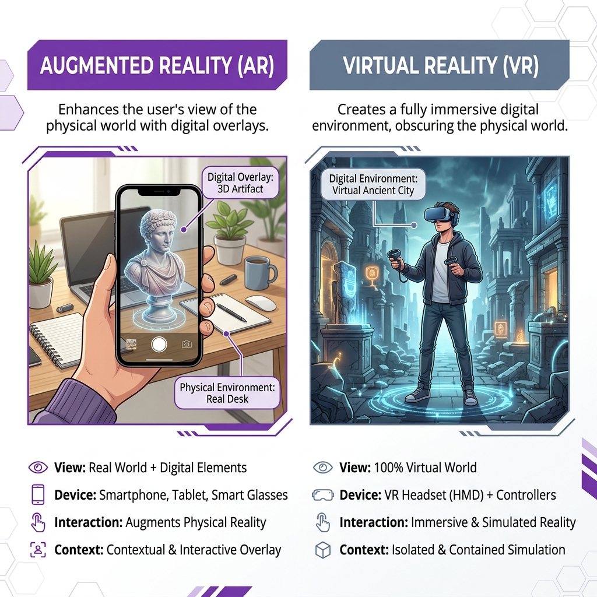
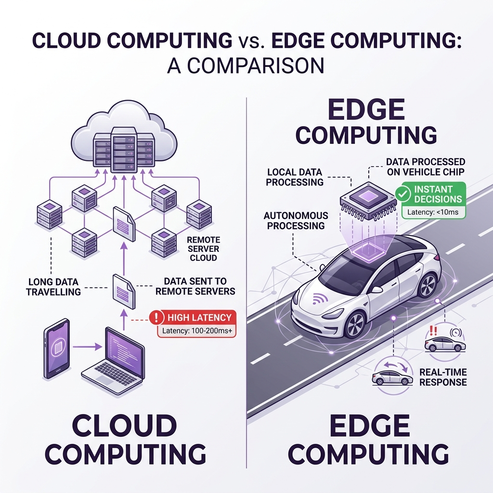
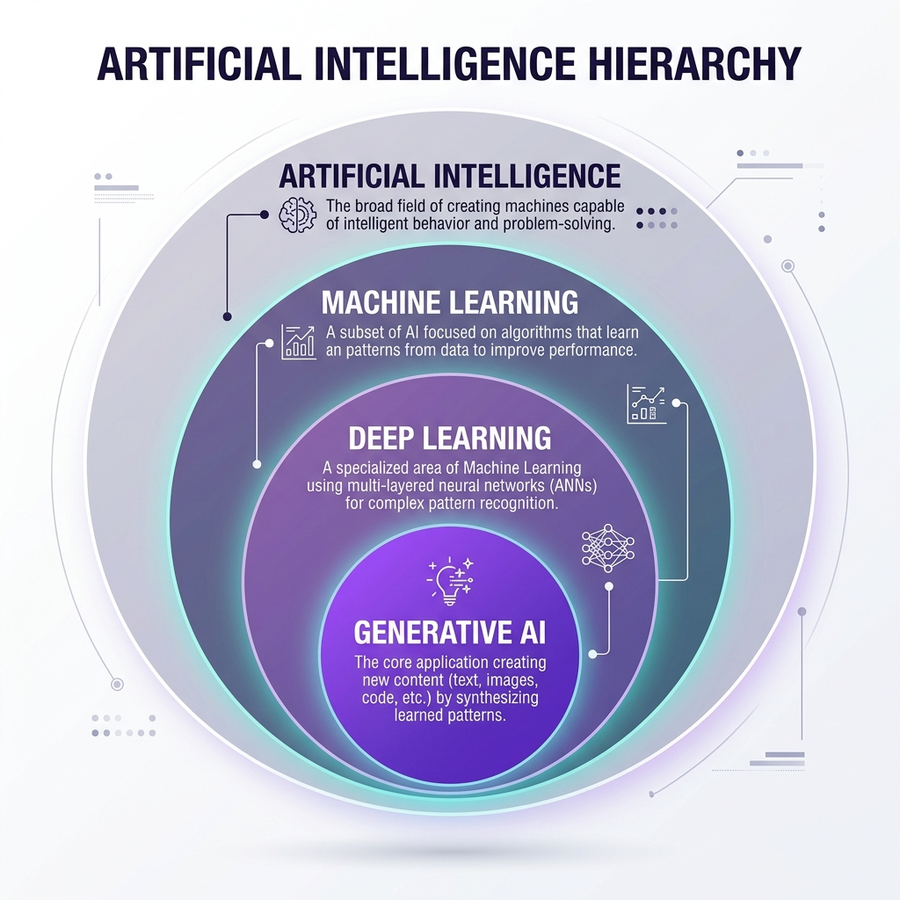
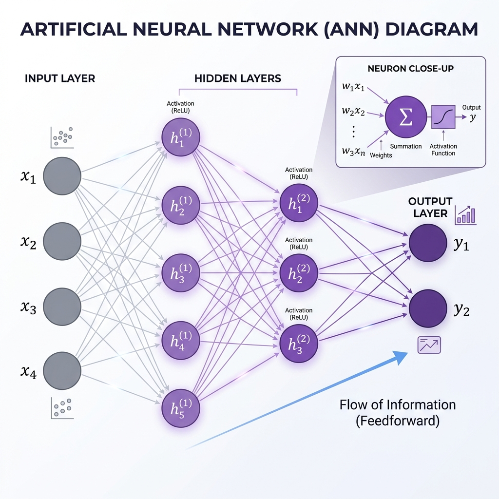
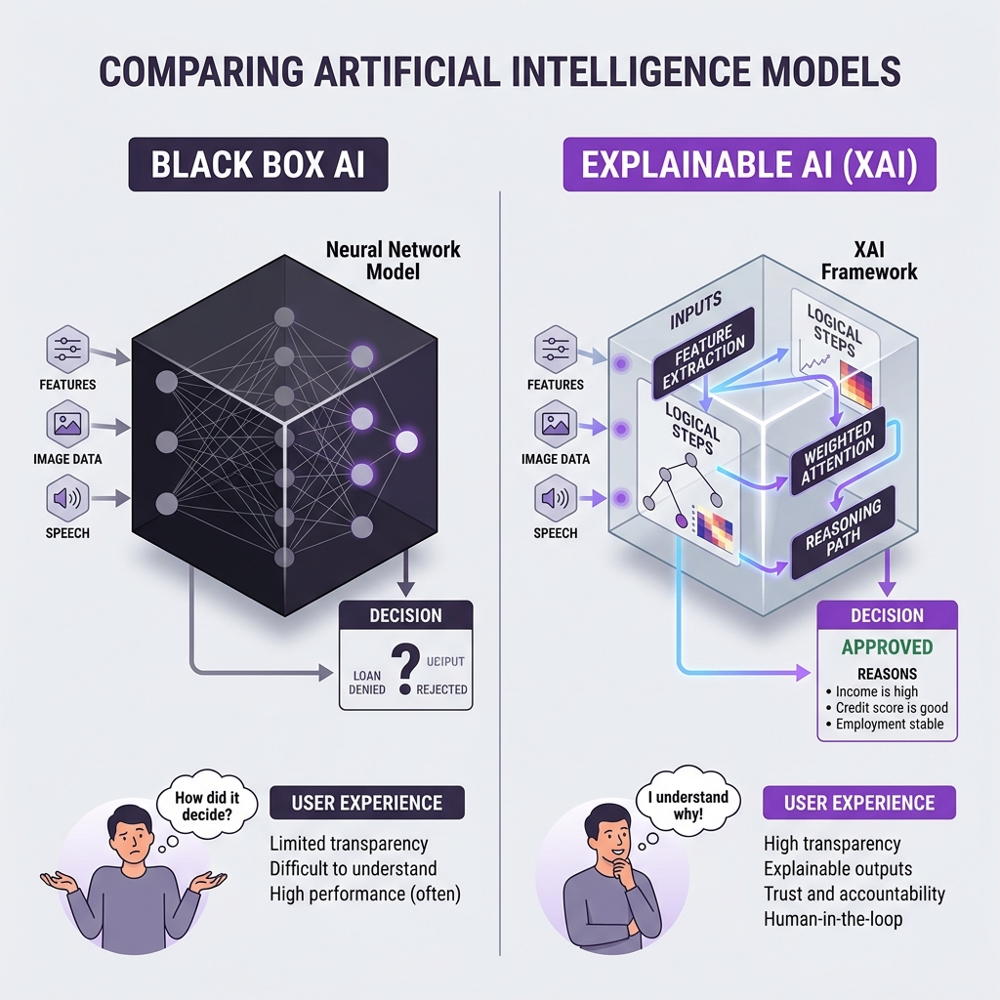

Programming and Artificial Intelligence (البرمجة والذكاء الاصطناعي)
Egyptian Baccalaureate — Second Year (الصف الثاني الثانوي)
First Semester (الفصل الدراسي الأول)
MINISTRY OF EDUCATION AND TECHNICAL EDUCATION, EGYPT
Developed in collaboration with international education and technical experts from Japan.
Unit 1 Overview: Information Technology and Society
Welcome to Unit 1: Information Technology and Society (Pages 4–32 of the official textbook). This unit acts as your gateway into the world of computer science, engineering, and artificial intelligence.
Over the course of four highly integrated lessons, you will transition from exploring the physical, hardware-level foundations of computing to understanding the mathematical models that allow computers to "learn," how these models are deployed to automate daily life and major industries, and finally, how we govern these powerful systems ethically and responsibly.
Here is how your learning journey unfolds:
Lesson 1-1: Development of Information Technology and Social Transformation (Pages 4–11): We trace the history of IT through five distinct stages, study the exponential growth of processor power (Moore's Law), analyze the physical limitations of silicon physics (quantum tunneling and leakage current), and investigate the emerging frontiers of edge computing, AR/VR, and quantum qubits.
Lesson 1-2: How AI Works (Pages 12–18): We peel back the layers of artificial intelligence. You will discover the nested hierarchy (AI > Machine Learning > Deep Learning > Generative AI), examine the fundamental paradigm shift from conventional rules to learning from data, map out artificial neural networks, and analyze how generative AI synthesizes language and why it can experience "hallucinations."
Lesson 1-3: AI in Daily Life and Industry (Pages 19–25): We map technical learning models onto concrete applications. You will explore everyday services (recommendations, voice assistants, translations, and face ID) and discover how four major industries (healthcare, agriculture, manufacturing, and logistics) are automated, while identifying why the mathematical complexity of neural networks introduces the "black-box" problem.
Lesson 1-4: Ethical Issues with AI (Pages 26–32): We address the socio-ethical consequences of modern automated systems. You will analyze the mechanics of algorithmic bias, discuss face recognition surveillance, study Explainable AI (XAI) as a tool for transparency, and master the four basic pillars of AI ethics: Fairness, Transparency, Privacy Protection, and Accountability.
Unit 1 Concept Flow Map
[ UNIT START ]
│
▼
[ LESSON 1-1 CONCEPTS ]
• IT Evolution Stages (ENIAC to Cloud Computing Era)
• Hardware Scaling (Moore's Law & Transistor Doubling)
• Physical Boundaries (Quantum Tunneling & Leakage Current)
• Emerging Frontiers (Edge Computing, Quantum Qubits, AR vs. VR)
│
▼
[ CONNECTION TO LESSON 1-2 ]
The exponential growth of hardware (Moore's Law) and massive data storage
(Cloud Computing) built the processing infrastructure needed to feed
deep neural networks and make modern AI practically viable.
│
▼
[ LESSON 1-2 CONCEPTS ]
• Defining Artificial Intelligence (Narrow vs. General AI)
• Programming Shift (Conventional Code vs. ML Learning from Examples)
• Internal Mechanics (Neural Network Connections)
• Generative Models (Predicting Plausible Elements vs. Fact Lookup)
• Technical Limits (Hallucinations & Training Data Scale)
│
▼
[ CONNECTION TO LESSON 1-3 ]
Once neural networks can learn complex patterns from data, they are packaged
into commercial algorithms that power daily consumer services and automate
decision-making pipelines across global industries.
│
▼
[ LESSON 1-3 CONCEPTS ]
• Daily Life AI (Recommendations, Voice Assistants, Translation, Face ID)
• Industrial AI (Healthcare Scans, Agriculture Pests, Predictive Maintenance)
• Algorithmic Strengths (Statistical Classification, Pattern Matching)
• System Boundaries (The Black-Box Problem, Lack of Contextual Ethics)
│
▼
[ CONNECTION TO LESSON 1-4 ]
Because complex industrial AI models function as "black boxes" and ingest
enormous amounts of historical user data, they inevitably trigger severe
dilemmas regarding systemic prejudice, personal privacy, and liability.
│
▼
[ LESSON 1-4 CONCEPTS ]
• Algorithmic Bias (Biased Training Datasets, Proxy Variables)
• Surveillance Concerns (Facial Recognition in Public Spaces)
• Technical Solutions (Explainable AI / XAI to audit the "Black Box")
• The Four Pillars of AI Ethics (Fairness, Transparency, Privacy, Accountability)
• Governance Models (Defining Liability & Human Final Decision-Making)
│
▼
[ UNIT UNDERSTANDING ]
LESSON 1-1
Development of Information Technology and Social Transformation
Lesson 1-1: Development of Information Technology and Social Transformation
1. Let's Start
Imagine a typical morning in Egypt: you wake up and check messages from your classmates on a social media app. For breakfast, you buy some food and pay instantly using a cashless payment application on your smartphone. Later, you log into an online platform to attend a live school lesson, and then order a textbook from an e-commerce website to prepare for your exams.
All of these actions feel natural, fast, and routine. Yet, just a few decades ago, none of this was possible. How did we get here? Information Technology (IT) did not appear overnight. It is the result of a steady, logical evolution of hardware and software. In this lesson, we will explore the history of IT, examine how it has transformed Egyptian society, and look ahead at the next wave of emerging technologies that will shape your future as an engineer or programmer.
2. What Will You Learn?
By the end of this lesson, you will be able to:
Explain the five major stages in the historical development of information technology and analyze their impact on daily life and global communication.
Identify and describe the five major social changes (SNS, E-commerce, Remote Work, Online Learning, and Cashless Payments) brought about by IT.
Analyze the physics-based limits of hardware scaling (Moore's Law), specifically understanding the challenges of quantum tunneling and leakage current.
Contrast emerging technologies such as Augmented Reality (AR) vs. Virtual Reality (VR), and Classical Computing vs. Quantum Computing.
Explain the necessity of Edge Computing in real-time, low-latency applications like autonomous driving.
3. The Main Journey: The History of IT
Information technology did not advance in a single, sudden step. Instead, it progressed through five distinct, chronological stages. Each stage solved a major engineering problem and laid the groundwork for the next.
+------------------+ +------------------+ +------------------+ +------------------+ +------------------+
| 1940s-1960s | | 1970s-1980s | | 1990s | | 2000s | | 2010s - Present |
| Birth of the | --> | Spread of | --> | Commercialization| --> | Rise of | --> | Spread of |
| Computer | | PCs (Personal) | | of the Internet | | Smartphones | | Cloud Computing |
+------------------+ +------------------+ +------------------+ +------------------+ +------------------+
Stage 1: The Birth of the Computer (1940s–1960s)
The Hardware: Early computers, such as the ENIAC, were massive machines that filled entire rooms. They relied on fragile, power-hungry components called vacuum tubes.
The Societal Impact: Because of their extreme size and cost, computers in this era were not for individuals. They were used almost exclusively by governments, militaries, and scientific institutions to perform heavy mathematical and scientific calculations.
Stage 2: The Spread of Personal Computers (1970s–1980s)
The Hardware: The invention of the microprocessor (a computer processor on a single silicon chip) allowed engineers to shrink computers drastically.
The Societal Impact: This technological leap birthed the Personal Computer (PC). For the first time, computers moved out of specialized research labs and onto office desks and into living rooms, making digital tools accessible to individuals for work and personal use.
Stage 3: The Commercialization of the Internet and the Web (1990s)
The Hardware: Computers, which were previously isolated machines, became physically connected via global telecommunication networks. The World Wide Web was commercialized.
The Societal Impact: The Internet democratized information. It created a global network where people could share information instantly, leading to the rapid spread of email and the globalization of news, commerce, and knowledge.
Stage 4: The Rise of Smartphones (2000s)
The Hardware: Mobile communication chips and miniature sensors were integrated into pocket-sized devices with touchscreens (such as the early iPhone).
The Societal Impact: This caused an explosive spread of mobile Internet. Society transitioned to "always-on" connectivity. People no longer had to sit at a desk to access the web; they could communicate, navigate, and access services from anywhere at any time.
Stage 5: The Spread of Cloud Computing (2010s–Present)
The Hardware: Instead of storing data and running programs on local hard drives, computing shifted to massive networks of physical servers located in high-security facilities housing physical servers.
The Societal Impact: Cloud computing introduced the model of "IT as a Service." It enabled companies and individuals to rent vast amounts of storage and computing power over the Internet. This shift is what made large-scale data analysis, big data, and modern artificial intelligence (AI) computationally possible.
4. Key Concepts
To speak like an IT professional and engineer, you must master the official terminology used in the textbook.
Moore's Law: An empirical observation made by Intel co-founder Gordon Moore stating that the number of transistors on an integrated circuit doubles approximately every two years, leading to an exponential increase in computing speed and capacity.
Cloud Computing: On-demand delivery of IT resources (like computing power, database storage, and applications) as a service over the Internet, backed by physical server racks.
Edge Computing: A localized data-processing architecture where data is processed directly on the device itself (at the "edge" of the network) instead of being sent back and forth to a distant cloud server.
SNS (Social Networking Service): Web-based platforms (such as Facebook, Instagram, or WhatsApp) that allow users to connect, build social networks, and rapidly share information.
E-commerce (EC): The buying and selling of goods, products, or services over the Internet (e.g., platforms like Amazon, eBay, or local Egyptian online shops).
Remote Work: A working style enabled by the Internet where employees perform their professional duties from home or other remote locations rather than traveling to a physical company office.
Online Learning: An educational method where study materials, interactive tasks, and live classes are delivered entirely over the Internet.
Cashless Payment: A transaction system where payments are made electronically (via credit/debit cards, QR codes, or mobile payment apps) without the use of physical paper cash.
Autonomous Driving: The use of artificial intelligence, sensors, and real-time computing to navigate and drive vehicles safely without human intervention.
AR (Augmented Reality): A technology that overlays digital assets (text, 3D models, or images) onto the real, physical world through a device screen or glasses.
VR (Virtual Reality): An immersive technology that completely shuts out the physical world and replaces it with an entirely computer-generated virtual environment using an eye-covering headset.
Quantum Computing: A revolutionary computing architecture that utilizes the subatomic principles of quantum mechanics to process highly complex calculations at speeds impossible for classical computers.
5. Understanding the Big Ideas
Idea A: Moore's Law and the "Silicon Wall"
Why do computers keep getting smaller, faster, and cheaper? The answer is Moore's Law. By packing more and more microscopic switches called transistors onto a single silicon chip, hardware performance doubles exponentially.
However, engineers are now hitting a physical limit known as the Silicon Wall. As transistors are shrunk down to the nanoscale (the size of just a few atoms), classical physics begins to break down, resulting in two severe engineering problems:
Quantum Tunneling Effect: Because the physical barriers inside the transistor are incredibly thin, electrons (which carry electrical signals) begin to behave like quantum waves and spontaneously "slip" or tunnel through the barriers. This means the transistor can no longer reliably switch "off."
Leakage Current: Because electrons are escaping, electrical current leaks out unintentionally. This wastes electrical energy and generates massive, destructive heat, making it impossible to increase performance while keeping power consumption low.
To bypass this wall, the computer industry has shifted from trying to make single processors faster to using parallel processing (putting multiple processor cores on a single chip) and developing entirely new paradigms like Quantum Computing.
CLASSICAL COMPUTING QUANTUM COMPUTING
+--------------------+ +--------------------+
| Uses Binary Bits | | Uses Qubits |
| (0 OR 1 Only) | | (Superposition) |
| | | |
| [0] or [1] | | [0] AND [1] at |
| (Single Switch) | | the same time! |
+--------------------+ +--------------------+
Idea B: Classical Bits vs. Qubits
To understand the power of quantum computing, we must contrast its basic unit of information with classical computing:
Characteristic
Classical Bit
Qubit (Quantum Bit)
Physical Principle
Classical electromagnetism (on/off switch)
Quantum mechanics (subatomic spin/state)
State
Must be either 0 or 1 at any given moment.
Can exist in a state of superposition (0 and 1 simultaneously).
Computational Power
Processes calculations sequentially (one after the other).
Processes massive combinations of states simultaneously, enabling explosive parallel computing.
Idea C: AR vs. VR (Visualizing Information)

AR augments the real world, whereas VR replaces it entirely.
Both Augmented Reality (AR) and Virtual Reality (VR) are transforming how we interact with data, but they do so in opposite ways:
AR (Augmented Reality): Adds digital layers to the real world. You can still see the actual room around you, but a digital object is overlaid on it.
How it looks: You hold up your smartphone camera, and a digital 3D model of an ancient Egyptian artifact appears resting on your real desk.
VR (Virtual Reality): Replaces the real world entirely. You wear a specialized, light-blocking headset that covers your eyes and ears, placing you inside a completely virtual environment.
How it looks: You put on a VR headset and suddenly find yourself standing inside a virtual, reconstructed tomb in Luxor, completely separated from your actual classroom.
Idea D: Cloud Computing vs. Edge Computing

Cloud computing processes data centrally with latency, while edge computing processes data locally for instant decisions.
While cloud computing centralizes data to provide massive storage and processing, edge computing decentralizes data for speed.
CLOUD COMPUTING:
[On-board Sensors] --------(Data sent over Internet)-------> [Remote Physical Servers]
│
(Process Data)
│
[On-board Actuators] <-----(Decision sent back)--------------<───────┘
*Result: High latency (delay), unsafe for real-time split-second decisions!*
EDGE COMPUTING:
[On-board Sensors] ---> [On-board Computer (Local Processing)] ---> [On-board Actuators]
*Result: Near-zero latency (under 0.1s), instant action!*
Dimension
Cloud Computing
Edge Computing
Where Data is Processed
Remote, centralized physical servers / server racks.
Locally, directly on the device itself.
Response Latency (Delay)
High latency (requires sending data over the internet and waiting for a response).
Ultra-low latency (instantaneous processing).
Best Used For
Large-scale data analysis, massive database storage, training complex AI models.
Storing millions of student school records on a central educational server.
An autonomous car detecting a pedestrian and braking instantly.
6. Real-Life Connection
Let us look at how these engineering concepts function in our everyday lives:
The 0.1-Second Rule in Autonomous Driving: In an autonomous car, cameras and sensors are constantly scanning the road. If a pedestrian suddenly steps in front of the vehicle, the car must make an emergency braking decision. If the car relied on Cloud Computing, it would have to send the high-resolution video over a cellular network to a remote server, wait for the server to process it, and wait for the brake command to be sent back. Even a tiny network lag of 0.1 seconds could cause a fatal accident. By utilizing Edge Computing, the car's local processor makes the decision on-board in milliseconds, saving lives.
The Cloud is Physical: Many people think "the cloud" is an invisible, magical space in the sky. In reality, the cloud is anchored to massive, highly physical buildings called physical server rackss. In Egypt, modern facilities house row after row of heavy server racks of heavy server racks, humming with electrical power and cooled by massive air-conditioning units, connecting Egyptian students to the global internet.
7. Think With Me (Integrated Textbook Activities)
🔍 Explore: IT History Reflection (Textbook Page 8)
Look back at Section 3 (The History of IT) and study the timeline table from the 1940s to the 2010s.
Identify one device or service from a previous era that is still widely used or talked about in Egypt today.
Predict: Which of the five historical stages do you think had the single most drastic impact on changing how humans live their daily lives? Write down one clear engineering or social reason to justify your choice.
🧠 Pause & Think: The Cost of Giving Up Tech (Textbook Page 11)
Consider the five major social changes brought by IT: SNS, E-commerce, Remote Work, Online Learning, and Cashless Payments.
If you were forced to give up four of these changes and could only keep one for the rest of your life, which one would be the absolute hardest to give up? Explain your choice by describing how your daily life would be affected without it.
In autonomous driving, why is it mathematically and practically necessary to process sensor data instantly using on-board Edge Computing rather than sending the data to the cloud for judgment? Refer to network latency and vehicle safety in your explanation.
💳 Think as an Engineer: The Cashless Transition (Textbook Page 23)
Imagine you are an engineer tasked with advising a local Egyptian community on whether they should transition to a fully cashless payment society. Carry out the following engineering steps:
Collect Data: Survey ten of your classmates or family members. Ask them: "Do you prefer to pay with cash, or do you use a cashless method (like a credit card, mobile wallet, or QR code)?" Record your results in a simple table.
Analyze Stakeholders: A technology change affects different people in different ways. Identify one major benefit and one major drawback of a fully cashless society for each of the following:
Stakeholder A (The Customer): A teenager buying groceries.
Stakeholder B (The Shop Owner): A small local kiosk (koshk) owner selling snacks.
Stakeholder C (The Vulnerable Citizen): An elderly person who does not own a smartphone or a bank card.
Decide: Based on your data and stakeholder analysis, write down your recommendation: Should your community transition to a fully cashless payment system? Suggest one realistic step the community should take, and provide two logical reasons to support your decision.
8. Important Notes for Students
💡 The Cloud has an Address: Never forget that cloud computing is not virtual. It runs on physical servers and server racks that consume immense amounts of physical space and electricity.
💡 Physics Limits Architecture: Moore's Law is not a natural law of physics like gravity; it is an empirical target. The physical limits of silicon (quantum tunneling) are what force computer engineers to invent new computing architectures like multi-core processors and quantum computing.
💡 Edge and Cloud are Partners: Edge computing does not replace cloud computing. They work together. The cloud is used to store massive historical data and train complex AI models over hours, while the edge is used to run those models on-device for split-second decisions.
9. Lesson Summary
IT History: Progressed systematically through 5 eras: Birth of Computers (ENIAC/scientific focus) $ ightarrow$ Personal Computers (PCs/individual focus) $ ightarrow$ The Internet (globalization of email/web) $ ightarrow$ Smartphones (always-on mobile connectivity) $ ightarrow$ Cloud Computing (IT as an on-demand service).
Moore's Law: Explains the exponential rise in transistor density. It is currently hitting a "Silicon Wall" due to quantum tunneling (electrons leaking through atomic-scale barriers) and leakage current (unintentional energy loss), leading to parallel processing and quantum computing.
Emerging Tech:
AR adds digital overlays to the real world; VR replaces the real world completely.
Classical computers process sequential 0s and 1s using binary bits; Quantum computers use qubits and superposition to process massive parallel states.
Edge computing processes data locally to eliminate latency (critical for safety, e.g., self-driving cars), while Cloud computing handles heavy central workloads remotely.
10. Quick Self-Check
Part A: True or False
Moore's Law is a strict physical law of nature that can never be broken. (False - It is an empirical observation of industry growth, and it is currently hitting physical silicon limits.)
Edge computing is safer than cloud computing for autonomous vehicles because it eliminates cellular network latency. (True - Processing data on-board prevents delays that could lead to accidents.)
In Virtual Reality (VR), the user can still see their actual physical surroundings overlaid with digital images. (False - That is Augmented Reality (AR). VR completely blocks out the real world.)
Quantum tunneling occurs when transistors are made so small that electrons spontaneously leak through physical barriers. (True - This is a major nanoscale barrier to classical CPU scaling.)
Part B: Match the Concept
Match the real-life activity to the correct technological change/concept:
Activity
Technological Concept
A Checking class assignments on an online educational portal
1 Cloud Computing
B A smart camera on a local device detecting motion and triggering an alarm instantly
2 Online Learning
C Utilizing a shared web database to compile millions of global meteorological records
3 Cashless Payment
D Tapping your smartphone on a receiver to pay for public transportation
4 Edge Computing
(Answers: A-2, B-4, C-1, D-3)
Part C: Short Answer Questions (Exam-Style Practice)
Explain how the physical scaling limits of silicon chips have pushed the computer industry to explore parallel processing and quantum computing. Refer to the specific nanoscale physics problems in your answer.
A rural Egyptian agricultural cooperative wants to deploy autonomous drones to scan fields for crop diseases. Explain whether the drones should use Cloud Computing or Edge Computing to process their image scans during flight, and justify your choice based on network availability and latency.
LESSON 1-2
How AI Works
Lesson 1-2: How AI Works
1. Let's Start
Imagine you are trying to teach a young child how to recognize an apple. How would you do it?
You probably wouldn't write down a list of rigid mathematical instructions, such as: "An apple must have a spherical radius of exactly 4 centimeters, a color hex code of #FF0000, and a brown cylinder of 1 centimeter protruding from the top." If you did, the child would immediately fail to recognize a green apple, a sliced apple, or a slightly larger apple. Instead, you would show the child many examples of real apples. Over time, their brain naturally identifies the patterns—the shapes, colors, and textures—that make an apple an apple.
For decades, computers were like rigid students who could only follow hand-written, mathematical instructions. If a programmer forgot to write a rule for every single scenario, the computer failed. Today, Artificial Intelligence (AI) has completely transformed this approach. Instead of humans writing the rules, we now give computers the data and examples, and they learn the rules themselves.
In this lesson, we will peel back the layers of this fascinating technology. We will explore how computers "learn," how they mimic the neural pathways of the human brain, and how modern systems generate entirely new images, texts, and sounds from a simple prompt.
2. What Will You Learn?
By the end of this lesson, you will be able to:
Explain what Artificial Intelligence (AI) is and identify its presence in daily applications.
Deconstruct the relationship between AI, Machine Learning, Deep Learning, and Generative AI using the concept of a nested hierarchy.
Contrast the fundamental shift between Conventional Programming and Machine Learning.
Describe how artificial neural networks are structured and how they process complex patterns.
Analyze the operational mechanics of Generative AI and explain why these systems are prone to "hallucinations."
Evaluate the benefits and risks of using Generative AI in academic and real-world environments.
3. The Main Idea
At its core, Artificial Intelligence (AI) is not a single, magical technology. It is a broad field of computer science dedicated to creating systems capable of performing tasks that typically require human intelligence—such as understanding spoken words, translating languages, recognizing faces in photos, or making complex decisions.
The central breakthrough of modern AI is the shift from rule-following to pattern-learning. Rather than executing pre-programmed code, modern AI utilizes massive datasets to train statistical models. By finding repeating mathematical relationships within this data, the system builds an internal model of the world.
To understand how this works, we must examine the nested categories of AI. Just like a set of traditional Russian nesting dolls, each major AI technology is built directly inside another, larger technology. Generative AI (like ChatGPT) cannot exist without Deep Learning, which cannot exist without Machine Learning, which is a sub-field of Artificial Intelligence.
4. Core Concepts

The relationship between AI, Machine Learning, Deep Learning, and Generative AI.
To speak like a computer scientist and engineer, you must master the official terminology used to describe AI systems. Here are the five foundational pillars of modern AI:
┌─────────────────────────────────────────────────────────┐
│ ARTIFICIAL INTELLIGENCE (AI) │
│ Umbrella term for mimicking human intelligence. │
│ ┌────────────────────────────────────────────────────┐ │
│ │ MACHINE LEARNING (ML) │ │
│ │ Learning patterns and rules from historical data. │ │
│ │ ┌───────────────────────────────────────────────┐ │ │
│ │ │ DEEP LEARNING (DL) │ │ │
│ │ │ Multi-layered neural networks for big data. │ │ │
│ │ │ ┌──────────────────────────────────────────┐ │ │ │
│ │ │ │ GENERATIVE AI (GenAI) │ │ │ │
│ │ │ │ Creating new content from prompts. │ │ │ │
│ │ │ └──────────────────────────────────────────┘ │ │ │
│ │ └───────────────────────────────────────────────┘ │ │
│ └────────────────────────────────────────────────────┘ │
└─────────────────────────────────────────────────────────┘
1. Artificial Intelligence (AI)
Official Terminology:Artificial Intelligence (AI)
Definition: A general term for technologies that reproduce or perform intelligent human behavior (such as learning, reasoning, judgment, and translation) on a computer.
The Role: It serves as the broad, over-arching framework for any software that acts intelligently.
Crucial Distinction (Narrow AI): Almost all AI we use today is Narrow AI (or specialized AI). This means the system is highly expert at performing one specific task (such as sorting spam or identifying a pedestrian in a camera) but possesses zero general intelligence outside that task. It does not "think" or feel like a human.
2. Machine Learning (ML)
Official Terminology:Machine Learning (ML)
Definition: One of the learning technologies that makes AI work. It focuses on training algorithms to learn patterns from historical data to make predictions and judgments on new, unseen data.
The Role: ML is the engine that shifts programming from manual input-output rules to automated pattern recognition.
Example: When your email provider automatically learns which messages are "spam" based on millions of emails previously flagged by other users, it is utilizing Machine Learning.
3. Deep Learning (DL)
Official Terminology:Deep Learning (DL)
Definition: An advanced sub-field of machine learning that uses multi-layered structure models called neural networks to learn highly complex patterns using massive, large-scale datasets.
The Role: DL solves problems that are too intricate for basic machine learning algorithms, such as understanding natural speech, detecting microscopic tumors in medical scans, or driving a car safely.
4. Neural Network
Official Terminology:Neural Network
Definition: Connected computing units inspired by the human brain that learn patterns from data.
The Role: It acts as the computational foundation of Deep Learning, allowing the system to learn directly from patterns in data to make automated judgments without manual programming. cess raw inputs (like the pixels of an image) and extract highly complex features to make automated judgments.
5. Generative AI
Official Terminology:Generative AI
Definition: An advanced AI technology nested inside Deep Learning that generates entirely new, original data (including text, images, audio, video, or programming code) based on user-provided inputs called prompts.
The Role: Unlike traditional AI, which only classifies or predicts existing data (e.g., "Is this email spam or not?"), Generative AI creates new content.
Example: ChatGPT, which generates written paragraphs, and text-to-image software (such as Midjourney or Imagen) that generates detailed illustrations from a description.
5. How It Works
A. The Programming Paradigm Shift: Conventional vs. Machine Learning
To truly understand how AI works, we must compare how we write computer software today versus how we did in the past.
Approach 1: Conventional Programming
In conventional programming, a human software engineer must write every single rule manually. The computer acts as a simple calculator that executes those hand-written rules.
Example: To build a basic calculator, the programmer writes explicit mathematical rules: If the user presses "+", take Input A and Input B, add them together, and output the sum.
The Limit: This approach fails for complex tasks. You cannot write explicit rules to describe every face in the world, or to translate every colloquial sentence in human language.
Approach 2: Machine Learning
In Machine Learning, we flip the equation. Instead of giving the computer the rules, we give the computer the Input Data and the Target Answers (Examples). The computer then uses mathematical optimization to discover the rules and patterns on its own.
The Result: The computer outputs a mathematical model representing the learned rules. We can then take this model and apply it to brand-new, unseen data to predict answers with high accuracy.
B. Inside a Neural Network: How Deep Learning Processes Data

An artificial neural network processing inputs through hidden layers to produce an output.
Deep Learning relies on an artificial neural network to identify patterns.
Neural networks are connected computing units inspired by the human brain that learn patterns from data.
Instead of manual rule-writing, these systems process data through interconnected mathematical components. By passing examples (like pictures of crops or sound clips of speech) through this network, the system automatically adjusts its internal calculations to find repeating features—such as edges, shapes, and textures—enabling highly accurate classifications or predictions.
C. How Generative AI Creates Content
Generative AI operates on a completely different mathematical mechanism than traditional search engines.
┌────────────────┐ ┌──────────────┐ ┌──────────────┐ ┌────────────────┐
│ User Prompt │────>│ Deep Learning│────>│ Statistical │────>│ New Generated │
│ "Draw a forest"│ │ Model │ │ Probability │ │ Content (Image)│
└────────────────┘ └──────────────┘ └──────────────┘ └────────────────┘
Prompt Input: The user provides an instruction (a prompt), such as "Write a short poem about Alexandria" or "Draw an Egyptian sailboat in the Nile".
Statistical Prediction: Rather than looking up a pre-existing database of poems or drawings, the Generative AI model processes the prompt through a deep learning model.
Predicting the Next Word/Pixel from Learned Patterns: The AI predicts, word-by-word or pixel-by-pixel, what elements should logically come next based on the mathematical patterns it learned during its massive training phase.
Novel Output: The resulting output is completely original and has never existed in that exact format before.
To make these technical architectures concrete, let's analyze how they manifest in the real world:
1. Machine Learning in Daily Life: Spam Filtering
How it works: A spam filter does not rely on a programmer writing a static list of "bad words." Instead, it is trained on millions of emails that users have labeled as "Spam" or "Not Spam".
The Lesson: The system automatically discovers that emails containing specific phrases (like "You won a cash prize!"), sent from unrecognized servers, and missing a recipient name are statistically likely to be spam. It adapts its rules automatically as spammers change their tactics.
2. Deep Learning in Industry: Autonomous Vehicle Pedestrian Detection
How it works: To drive safely, an autonomous car must identify pedestrians, cyclists, and traffic lights instantly. Standard ML struggles with the sheer variety of human clothing, lighting, and angles.
The Lesson: By processing live camera feeds through deep neural networks trained on millions of driving videos, the car's computer can instantly segment objects and recognize a human silhouette in real-time, even in heavy rain or low light.
3. Generative AI: Large Language Models (LLMs) & Hallucinations
How it works: Models like ChatGPT generate human-like essays. However, because they are designed to predict the most plausible-sounding next word rather than checking factual records, they are highly prone to hallucinations—confidently generating facts, dates, or citations that are completely made up.
The Lesson: A generative model prioritizes linguistic fluency over factual truth. Therefore, its output must always be verified by a human.
7. Compare & Understand
To avoid common traps on exams and in your engineering projects, study this comparison table carefully:
Criteria
Conventional Programming
Machine Learning (ML)
Deep Learning (DL)
Generative AI (GenAI)
How Rules are Created
Hand-written manually by human software engineers.
Automatically learned by algorithms from data.
Discovered by artificial neural networks.
Synthesized statistically from prompts.
Data Requirements
Requires zero training data; only requires logic rules.
Requires structured historical datasets.
Requires massive, large-scale datasets to learn complex patterns.
Requires astronomical datasets (text, images, audio) for pre-training.
System Architecture
Simple conditional logic (IF/THEN statements).
Statistical algorithms (e.g., linear regression, decision trees).
Completely new content (essays, digital paintings, audio clips).
Core Limitation
Fails on complex, un-rulemable human tasks.
Struggles with raw, unstructured data (like high-res video or audio).
Requires massive compute power; functions as a "black box".
Prone to plausible-sounding "hallucinations".
8. Think With Me
✦ Activity 1: Explore (In Pairs) — Detecting Digital Intelligence
Textbook Context (Page 31): List three tasks that your smartphone or laptop performs for you that seem to require human-like "intelligence."
Prompt for Discussion:
For each task, predict: Does the computer follow a set of rigid, pre-programmed rules (Conventional Programming), or does it learn from examples (Machine Learning)?
Write down your reasons and share them with your partner.
Step-by-Step Guidance for Students:
Task A: Auto-correcting text messages. (Prediction: Machine Learning. Reason: It must adapt to your personal typing slang and predict what word you intend to write based on past examples of your typing history).
Task B: Setting a mechanical alarm clock. (Prediction: Conventional Programming. Reason: It follows a rigid mathematical rule: If current time == set alarm time, then ring speaker. No pattern learning is needed).
Task C: Grouping photos of your friends into individual albums. (Prediction: Deep Learning. Reason: The phone analyzes high-dimensional facial features, clusters similar faces, and groups them, which is far too complex for hand-written rules).
✦ Activity 2: Think It Through — The ML Common Denominator
Textbook Question (Page 29-30): Spam filters and product recommendation systems perform completely different tasks. From the perspective of how AI works, explain what these two applications have in common.
Answer Explanation:
While a spam filter blocks unwanted emails and a recommendation system suggests a new song on Spotify, they share the exact same underlying mechanism:
They rely on user-behavior data: The spam filter analyzes what emails users mark as trash; the recommendation system analyzes what songs users listen to or skip.
They discover patterns automatically: Neither system has a programmer manually typing in every bad word or every music genre combination.
They make probabilistic predictions: Both models calculate a score—the probability that an email is spam, or the probability that a user will enjoy a specific song—and take action based on that score.
✦ Activity 3: Pause & Think — The Danger of Rare Data
Textbook Question (Page 32-33): Deep learning requires large-scale data to learn. Why might an AI system struggle with something it has rarely seen in its data?
Answer Explanation:
Because deep learning models find patterns using statistical frequency, they can only learn what is present in their training data. If an AI system has only been trained on pictures of sedans and SUVs, it will fail to recognize a rare historical carriage, a person riding a unicycle, or a unique construction vehicle. If the data has never seen a scenario, the internal rules of the neural network cannot adjust to handle it, leading to incorrect judgments or complete failures.
✦ Activity 4: Think It Through — The Illusion of Factuality
Textbook Question (Page 38): Generative AI can produce text that sounds highly plausible but is factually incorrect (a "hallucination"). Explain why it is dangerous to use such output directly in a school report, and state what learners should do instead.
Answer Explanation:
Using unverified Generative AI output is dangerous because:
It can spread disinformation and incorrect academic facts, leading to poor grades and a loss of academic integrity.
Because the writing style is fluent, professional, and confident, it easily tricks the reader into believing a falsehood.
What learners must do instead: Students must treat Generative AI strictly as a brainstorming assistant. Every factual claim, date, historical event, and citation must be independently cross-checked and verified against trusted, primary sources (such as textbooks, academic databases, or official library records).
✦ Activity 5: Think as an Engineer — Investigate & Decide (Case Study: AI Homework Policy)
Textbook Project (Page 40-41): As an engineering student, you must investigate a real-world technological challenge, weigh its stakes, and propose a community policy.
Step 1: Investigate
Find one documented example where a generative AI produced a factual "hallucination."
Documented Example: In a widely publicized legal case, a lawyer used a generative AI tool to draft a legal brief. The AI confidently invented six completely fake judicial court cases, complete with fabricated case numbers and fake judicial opinions, which the lawyer submitted to a real judge. The mistake was discovered when the opposing legal team attempted to look up the cases and found they did not exist.
Step 2: Weigh it up
Analyze the trade-offs of allowing students to use Generative AI (like ChatGPT) to write school reports:
Stakeholder
Benefits
Risks & Drawbacks
The Student
• Speeds up brainstorming and outlining. • Helps students overcome "writer's block." • Corrects grammar and improves phrasing.
• Encourages intellectual laziness. • Leads to academic plagiarism. • Risks submitting false information due to hallucinations.
The Teacher
• Saves time if used to generate practice quizzes. • Forces teachers to design more creative, oral, or class-based exams.
• Makes it difficult to grade a student's actual writing skill. • Erases the ability to assess whether a student truly understands a topic.
Step 3: Decide
Your Recommendation: The school should implement a "Hybrid Integration Rule" for homework.
The Rule: Students are permitted to use Generative AI only during the pre-writing stage (for brainstorming topics, creating outlines, or checking grammar). However, students are strictly prohibited from copying AI-generated text word-for-word. Additionally, every student must submit a short appendix listing the prompts they used, along with manual verifications for every factual claim.
Justifications:
This rule prepares students for a digital future where AI tools are widespread, teaching them how to use AI responsibly as a utility.
It protects academic integrity by ensuring the final writing, synthesis, and critical thinking are performed entirely by the student's own mind.
✦ Activity 6: In a New Context — AI in the Fields
Textbook Challenge (Page 43): A farmer wants to use AI to distinguish healthy crops from diseased ones in photographs. Using what you learned about deep learning and image analysis, explain:
What would the AI need to learn from?
Identify one reason its judgment might be wrong.
Step-by-Step Engineering Answer:
What the AI needs to learn from: The farmer must collect a massive training dataset consisting of thousands of high-resolution digital photographs of both healthy crops and diseased crops. Each photo must be clearly labeled by agricultural experts (e.g., "Healthy Wheat", "Wheat with Rust Fungus", "Dehydrated Wheat"). The AI will process these photos through a deep neural network to learn the specific pixel patterns of leaf discoloration, spot shapes, and wilting geometry.
Why its judgment might be wrong: The AI's judgment could fail if a healthy leaf has a splash of mud or bird droppings on it. Because mud spots might look mathematically similar to fungal rust spots, the neural network—which doesn't actually understand what "mud" is—might falsely flag a perfectly healthy crop as diseased due to visual pattern confusion.
9. Important Notes
AI is an Umbrella, Not a Single Tool: Never use the terms "AI" and "Machine Learning" as exact synonyms. Machine learning is specifically a method of training computers using data, whereas AI covers any technology that mimics intelligence (including early rule-based systems).
The Golden Rule of Generative AI:Fluency does not equal Factuality. Just because an AI sounds highly confident, professional, and grammatically perfect does not mean its output is true.
Narrow AI Limits: Modern AI does not have a "mind." A facial recognition algorithm can identify millions of faces in seconds, but it does not know what a "human being" actually is. It only processes arrays of numbers.
10. Lesson Summary
Artificial Intelligence (AI) is the broad scientific field of mimicking human intelligent behaviors on computers.
The field is organized as a nested hierarchy: AI contains Machine Learning, which contains Deep Learning, which contains Generative AI.
Conventional Programming processes input data using rules hand-written by humans to output answers. Machine Learning processes input data and target answers to let the computer discover the rules automatically.
Deep Learning relies on Artificial Neural Networks, which are connected computing units inspired by the human brain that learn patterns from massive datasets.
Generative AI utilizes deep learning to synthesize entirely new text, images, or audio from prompts by predicting statistically likely elements, which occasionally results in factual errors called hallucinations.
11. Quick Self-Check
Section A: Test Your Definitions
Define Artificial Intelligence (AI) according to the textbook.
What is an artificial neural network, and what biological system is it modeled after?
What is a prompt in the context of Generative AI?
Explain the term hallucination.
Section B: Test Your Understanding
Why is the relationship between AI, Machine Learning, Deep Learning, and Generative AI described as a "nested hierarchy"? Draw a simple diagram to support your answer.
Explain how the programming approach of Conventional Programming differs from Machine Learning.
In a deep neural network designed for facial recognition, what is the specific role of the hidden layers compared to the input and output layers?
Why does a generative AI model sometimes produce highly believable but completely false answers? What is the mathematical cause behind this?
Section C: Apply Your Engineering Mind
Scenario: A school wants to use a machine learning model to predict student final grades based on study hours. The developer only trains the model using data from five students.
Explain why this model will likely fail to make accurate predictions for the rest of the school, referencing core concepts from this lesson.
Scenario: You are asked to design an AI system that can automatically translate Egyptian hieroglyphics on temple walls into English text.
State whether you would use Conventional Programming or Machine Learning for this task, and justify your choice with two technical reasons.
Quick Self-Check Model Answers
AI Definition: A general term for technologies that reproduce or perform intelligent human behavior (learning, reasoning, judgment, etc.) on a computer.
Neural Network Definition: Connected computing units inspired by the human brain that learn patterns from data.
Prompt Definition: The user-provided text, instruction, or input given to a Generative AI system to generate new data.
Hallucination Definition: The phenomenon where a generative AI system generates highly fluent, plausible-sounding content (text, facts, or details) that does not match reality and is completely fabricated.
Nested Hierarchy Explanation: They are nested because they are not parallel technologies; they represent sub-fields within one another. AI is the broadest field. Machine Learning is a sub-field inside AI. Deep Learning is an advanced technology inside Machine Learning. Generative AI is a technology inside Deep Learning. (Student diagram should show concentric shapes labeled AI > ML > DL > Generative AI).
Conventional vs. ML: In conventional programming, humans write hand-written rules, and the computer processes input data according to those rules to output results. In machine learning, humans provide data and examples (input and target results), and the computer automatically finds the rules and patterns.
Layers' Role: The input layer receives raw data (e.g., individual pixel values of the face). The hidden layers process this data in stages, where each layer extracts a higher level of abstraction (Layer 1 detects simple edges, Layer 2 detects shapes like eyes/nose, Layer 3 combines them). The output layer averages these calculations to deliver the final probability judgment (e.g., identifying who the face belongs to).
Cause of Hallucination: Generative AI is built on statistical deep learning. It does not look up pre-existing facts in a database; instead, it generates text by predicting the next statistically plausible word or element based on the patterns it learned during training. Because it prioritizes linguistic plausibility over checking external facts, it can confidently output highly fluent but completely incorrect sentences.
Five Students Scenario: The model will fail because deep learning and machine learning require large-scale data to identify accurate, generalizable patterns. With only five students, the data is too narrow to account for variables like prior knowledge, study techniques, or sleep. The model will struggle because the dataset lacks representation, which is a major technical limit of ML.
Hieroglyphics Scenario: You must use Machine Learning.
Reason 1: Human temple carvings contain enormous variations in erosion, lighting, angles, and artist style. Writing hand-written rules for every possible variation in conventional programming is practically impossible.
Reason 2: By using ML (specifically Deep Learning), we can feed the system thousands of labeled images of hieroglyphs, allowing the neural network to automatically discover the visual patterns that define each symbol, regardless of minor cracks or shadows on the temple wall.
Lesson 1-3 — AI in Daily Life and Industry
1. Let's Start
Imagine waking up in the morning and unlocking your smartphone simply by looking at it. As you eat breakfast, you open a video-sharing app, and it immediately suggests three videos that perfectly match your interests. Before leaving for school, you ask your phone’s voice assistant for the weather forecast, and it responds in a natural human voice.
All of these common morning actions have one thing in common: they are powered by Artificial Intelligence (AI). AI is no longer a futuristic concept confined to research labs; it has quietly woven itself into the fabric of our daily routines and is actively transforming global industries. In this lesson, we will explore where AI is used, what makes it so powerful, and why we must exercise caution when relying on its judgments.
2. What Will You Learn?
By the end of this lesson, you will be able to:
Identify and explain key examples of how AI is used in daily life (including recommendation systems, voice assistants, machine translation, and face recognition).
Describe the roles and benefits of AI across various industries (such as healthcare, agriculture, manufacturing, and logistics).
Analyze the specific strengths of AI (pattern recognition, classification, and prediction) and the critical areas that require human caution (including algorithmic bias, the black-box problem, hallucinations, and privacy concerns).
3. Understanding AI Applications
In Lesson 1-2, we learned that modern AI systems find patterns and rules in massive amounts of data. But how does this translate into practical software?
Essentially, AI applications take input data from our daily lives or industrial environments—such as search history, spoken voices, camera feeds, or temperature sensors—and use deep neural networks to recognize, classify, or predict what that data means. By automating these tasks of recognition and prediction, AI solves complex problems that previously required human eyes, ears, or hand-written programming rules.
4. AI in Daily Life
The textbook highlights four foundational AI technologies that we interact with in our daily lives:
Daily Life AI Service
What It Is & How AI Is Involved
What Problem It Solves
Textbook Examples
Key Characteristics
Recommendation System
An AI system that analyzes past user behavior data to predict future preferences and suggest content.
Overcomes "information overload" by filtering millions of options to display only what the user is highly likely to enjoy.
YouTube, Amazon, Spotify.
Continually learns and updates its suggestions as the user interacts with the platform.
Voice Assistant
An AI technology that recognizes human speech, processes natural language commands, and executes tasks.
Allows hands-free operation of devices, making technology more accessible and convenient.
Siri, Google Assistant.
Uses speech recognition to convert voice to text, and speech synthesis to speak back to the user.
Machine Translation
An AI system that automatically translates written text or spoken words from one language to another.
Bridges global communication barriers instantly, without needing a human translator.
Google Translate, DeepL.
Analyzes full sentences and contextual patterns rather than translating word-by-word, producing more natural results.
Face Recognition
An AI technology that automatically detects, maps, and identifies human faces in photographs or video feeds.
Replaces manual password entry and physical keys with secure, instant biometric authentication.
Smartphone unlocking.
Maps unique facial landmarks and matches them against stored templates in milliseconds.
💡 Think With Me: Exploring Your Personal AI Footprint
Explore • In Pairs (Textbook Activity, Page 50):
List three services you or your family have used this week that are powered by AI.
Predict: What specific data did each of those AI services need to collect and analyze to do its job?
Decide: Which of these three services would matter most or cause the most trouble if the AI made a mistake? Explain your reasoning.
Egypt-focused Model Answers for Students:
Service 1: YouTube Recommendations.
Data needed: History of watched videos, video search queries, time spent watching each video, and the "like" buttons pressed.
Impact of mistake: Low. If the AI suggests a video you dislike, it is a minor annoyance; you simply scroll past it.
Service 2: Mobile Cashless/QR Payment App (Fawry or Instapay using Face Recognition for authentication).
Data needed: High-resolution live camera feed of your face, compared against a mathematically mapped facial template stored securely on the device.
Impact of mistake: High. If the face recognition fails to unlock, you cannot make an urgent payment. Worse, if it misidentifies someone else as you (a false positive), they could access your money.
Service 3: Machine Translation (Google Translate for schoolwork).
Data needed: The input sentence in Arabic, and historical pairs of Arabic-English translations from global databases.
Impact of mistake: Medium. A bad translation on a homework assignment might cost you a grade mark, but in medical or legal settings, translation errors can have serious consequences.
5. AI in Industry
Beyond personal convenience, AI is driving a massive wave of automation across specialized industries. The textbook outlines four key sectors:
A. Healthcare (Image-Diagnosis AI)
The Role of AI: In medical settings, AI is trained on thousands of medical scans. These Image-diagnosis AI systems analyze X-rays, CT scans, and MRI images to detect subtle signs of disease, such as tumors or bone fractures. Additionally, AI helps researchers in drug discovery, simulating how molecular compounds might fight diseases to speed up the creation of new medicines.
The Problem Solved: Human doctors can suffer from fatigue or miss microscopic anomalies during long shifts. AI acts as a tireless second set of eyes, flagging potential issues for review.
B. Agriculture (Smart Crop Monitoring)
The Role of AI: Farmers use AI models connected to camera drones or ground sensors to analyze crop health. The AI is trained to instantly identify plant diseases, spot pest infestations on leaves, and analyze weather data to predict the optimal harvest timing.
The Problem Solved: Instead of inspecting large fields of crops leaf-by-leaf, farmers can pinpoint exact sections of a field that need water, fertilizer, or pest control, saving money and resources.
C. Manufacturing (Predictive Maintenance & Automation)
The Role of AI: On assembly lines, camera-based AI automatically inspects manufactured items for tiny scratches or defects, instantly rejecting imperfect products. More deeply, factories use Predictive Maintenance systems. By attaching sensors to factory machines, AI continuously monitors vibrations, temperature, and sound, predicting exactly when a machine part is about to break.
The Problem Solved: Traditional factories either wait for a machine to break (causing costly, unexpected shutdowns) or replace parts on a rigid schedule (which is wasteful). Predictive maintenance allows parts to be replaced exactly when needed, keeping production running smoothly.
D. Logistics (Route Optimization)
The Role of AI: Logistics and delivery companies use AI algorithms to plan delivery routes. The AI processes real-time data, including traffic jams, road closures, package weights, delivery addresses, and driver schedules, to calculate the fastest path.
The Problem Solved: It prevents delivery trucks from getting stuck in traffic, minimizes fuel consumption, and ensures packages arrive on time, even in highly congested cities.
💡 Think With Me: The Doctor vs. The Machine
Think It Through (Textbook Activity, Page 52): A hospital is considering using image-diagnosis AI to detect diseases from X-ray images. Explain why the final diagnosis should always be confirmed by a human doctor rather than left to the AI alone.
Model Answer: While an image-diagnosis AI is exceptional at finding visual patterns (like a tiny spot on an X-ray), it does not actually "understand" medicine, human biology, or the patient's individual history. AI lacks human responsibility and cannot be legally or ethically accountable for an incorrect diagnosis. Furthermore, AI can suffer from the "black-box problem," meaning it cannot explain why it flagged a spot. A human doctor must synthesize the AI’s flags with the patient’s physical symptoms, run confirmatory tests, and take ethical and legal responsibility for the final treatment plan.
6. Real-World Examples
Let's look at how the textbook's key industrial concepts function in practice:
The Self-Driving Fleet (Logistics): Imagine a delivery company in Cairo. Instead of drivers guessing which streets to take during rush hour, an AI system analyzes live GPS data from hundreds of vehicles. It dynamically reroutes the fleet, saving thousands of liters of fuel daily and reducing urban congestion.
The Unbroken Assembly Line (Predictive Maintenance): A manufacturing plant utilizes robotic arms to pack goods. An AI system monitors the electrical current flowing through the arm's motor. When it detects a tiny, abnormal fluctuation—too small for human operators to notice—it alerts engineers that a gear is wearing out. The gear is replaced during a planned lunch break, avoiding a sudden line stoppage.
7. Compare & Understand
To help solidify these distinctions, compare the core applications in daily life versus industry:
Application Domain
Primary AI Mechanism
Input Data Type
Core Objective
Recommendation Systems (Daily Life)
Collaborative Filtering & Pattern Matching
User clicks, search queries, watch time
Maximize user engagement and personal satisfaction
Image-Diagnosis AI (Industry)
Computer Vision & Classification
Medical scans (X-rays, CT, MRI)
Maximize diagnostic accuracy and assist human doctors
Predictive Maintenance (Industry)
Time-Series Anomaly Detection
Sensor data (vibrations, heat, sound)
Prevent mechanical failures and minimize downtime
8. Connections: How AI Works → Where AI Is Used
How does the mathematical theory of neural networks from Lesson 1-2 connect to these real-world uses?
In Lesson 1-2, we saw that a Neural Network is made of layers of interconnected computing units that learn patterns from training data.
In Face Recognition, the input layer receives a grid of image pixels. The hidden layers find patterns (edges, nose shapes, eye distances). The output layer predicts the probability of a match.
In Recommendation Systems, the input layer receives your clicking history. The hidden layers find correlations with other users' behaviors. The output layer predicts which video you are statistically most likely to watch next.
AI does not have magic intelligence; it is simply applying the pattern-recognition mechanics of machine learning to specialized real-world data.
9. Think With Me: AI in the Fields & Personal Data Concerns
Let's explore the ethical and practical trade-offs of AI through these textbook exercises:
Think It Through — AI in Agriculture (Textbook Activity, Pages 58–59): In agriculture, give one realistic advantage of introducing AI and one concern that should be considered before introduction, and briefly explain the reason for each.
Model Answer:
Advantage:Resource Efficiency. By using AI drones to identify precisely which crops are suffering from pests, a farmer only sprays pesticide on those specific diseased leaves rather than the entire field. This drastically cuts chemical costs and protects the environment.
Concern:Cost and Infrastructure Barriers. Setting up drones, high-resolution cameras, and agricultural AI software requires high initial funding and stable digital infrastructure. Small-scale farmers in rural villages may struggle to afford this technology, widening the economic gap between rich and poor farms.
Pause & Think — Privacy & Personal Data (Textbook Activity, Page 52): AI services often use your personal data—what you watch, buy, or say. Why does this raise privacy concerns, and who should decide how your data is used?
Model Answer:
Why it raises concerns: To make highly accurate suggestions, AI services must constantly log and analyze our personal conversations, location histories, and purchasing habits. If this massive database of intimate information is leaked, hacked, or sold without our knowledge, it can lead to identity theft, tracking, or manipulative advertising.
Who should decide: The individual user must have ultimate control. While developers need data to train and run models, users should have transparent options to view, edit, restrict, or completely delete their stored personal data. Governments must enforce strict data protection laws to ensure companies respect this digital boundary.
10. Important Notes (What AI is Good At vs. What Requires Caution)
The absolute core takeaway of this lesson is understanding the technical boundaries of AI.
What AI is Good At
Finding complex patterns in massive, chaotic datasets.
Classifying data at high speeds (e.g., separating healthy crop photos from diseased ones).
Making probabilistic predictions (e.g., predicting when a factory machine will fail based on sensor vibrations).
What Requires Caution (The Technical & Ethical Boundaries)
Algorithmic Bias: If training data is biased, the AI's predictions will be biased (Garbage In, Garbage Out).
The Black-Box Problem: Deep neural networks are so mathematically complex that humans cannot easily inspect how the AI reached its final decision, making it difficult to verify its safety or fairness.
Hallucinations: Generative models generate fluent text by predicting statistically probable words, meaning they can confidently state incorrect facts as absolute truth.
Lack of Ethical and Moral Context: AI does not understand human emotions, values, legal responsibility, or social fairness. Because of these limits, critical, final, and ethical decisions must never be left solely to AI.
11. Lesson Summary
Daily Life Integration: AI is embedded in everyday life through recommendation systems (YouTube, Spotify), voice assistants (Siri), machine translation (DeepL), and biometric facial recognition.
Industrial Transformation: AI drives efficiency across critical sectors: healthcare (image diagnostics), agriculture (crop disease monitoring), manufacturing (defect scanning and predictive maintenance), and logistics (dynamic route planning).
The Pattern Strength: AI's power lies in its ability to quickly perform high-speed pattern recognition, data classification, and statistical predictions from huge databases.
The Human Safeguard: Because AI lacks moral judgment, can hallucinate, operates as an unexplainable "black box," and can absorb dataset biases, human oversight is mandatory. The principle of "human final decision-making" (human final decision-making) ensures that AI acts as an assistant, while humans make the final, responsible decisions.
12. Quick Self-Check
Questions
[Recall] Define Predictive Maintenance as used in manufacturing.
[Understanding] Explain the Black-Box Problem and why it poses a major challenge for medical image-diagnosis systems.
[Comparison] Contrast the input data and output decisions of a Recommendation System with those of an Image-Diagnosis AI.
[Application]In a New Context (Textbook Activity, Page 61): A school library wants to use an AI system to recommend books to students based on what they have borrowed in the past.
(A) Explain how the AI recommendation system would work.
(B) Identify one practical caution or risk the school should consider before deploying this library AI.
Grounded Model Answers for Self-Check
Answer:Predictive Maintenance is a manufacturing system that uses AI to continuously analyze machine data (such as heat, sound, or vibrations from sensors) to predict exactly when a component is likely to wear out or fail, allowing engineers to replace it before an unexpected factory shutdown occurs.
Answer: The Black-Box Problem refers to the characteristic of deep neural networks where the mathematical calculations are so complex and non-linear that humans cannot clearly trace or understand how the AI processed its inputs to reach a specific decision. In medical image diagnostics, this is dangerous because if an AI flags a scan as cancerous, a doctor cannot inspect the AI's exact reasoning path to verify if it is correct or if it was fooled by an irrelevant artifact in the scan image.
Answer:
Recommendation System: Ingests subjective personal behavioral inputs (user clicks, ratings, watch time) to output a probabilistic prediction of content preference (e.g., suggesting a movie) to maximize engagement.
Image-Diagnosis AI: Ingests objective medical imaging inputs (pixel arrays of X-rays or CT scans) to output a precise classification of disease presence (e.g., tumor detected) to assist in medical treatment.
Answer:
(A) How it works: The AI would collect historical borrowing logs from all students (e.g., Student A borrowed Book X and Book Y; Student B borrowed Book X, Book Y, and Book Z). The AI's machine learning model would identify patterns of book similarity. If a new student borrows Book X and Book Y, the system calculates a high probability that they will also enjoy Book Z, and displays a recommendation on their library screen.
(B) Caution/Risk:Filter Bubbles and Diversity Loss. If the AI only recommends books similar to what students have previously borrowed, students might get stuck in a "filter bubble," reading the same genre repeatedly. This limits their exposure to new subjects, defeating the educational goal of a library, which is to encourage broad exploration and diverse reading. Additionally, tracking every student's reading history raises privacy concerns regarding how their personal habits are stored and protected.
LESSON 1-4
Ethical Issues with AI
Lesson 1-4: Ethical Issues with AI
1. Let's Start
Imagine applying for your dream job or a university scholarship, only to receive a rejection email seconds later. When you ask why, the company replies: "Our AI system rejected you, and we don't know why—the code is too complicated for us to understand."
Does that feel fair? Who is responsible for that decision? Is it the software programmer, the company's human resources manager, or the computer itself?
As we have seen throughout this unit, artificial intelligence is an incredibly powerful tool. It can optimize logistics, detect crop diseases, and flag tumors on X-rays. However, this immense technological capability creates profound questions about responsible use. Because AI systems make decisions that directly affect human opportunities, safety, and freedoms, we must establish clear ethical boundaries. In this lesson, we will explore why AI creates these ethical dilemmas, the technical roots of algorithmic bias, and the four core principles of AI ethics that help us build a safer digital society.
2. What Will You Learn?
By the end of this lesson, you will be able to:
Explain what algorithmic bias is and identify its main causes in data and system design.
Describe the relationship between the technical "black-box" problem and the ethical need for Explainable AI (XAI).
Analyze the dual nature of facial recognition technology regarding convenience, public safety, and personal privacy.
Connect the four basic pillars of AI ethics (Fairness, Transparency, Privacy Protection, and Accountability) to real-world educational, social, and industrial scenarios.
3. Why Does AI Create Ethical Questions?
At its core, AI does not think like a human. It does not possess a moral compass, common sense, or an understanding of right and wrong. It is a mathematical engine that discovers statistical correlations in data.
AI creates ethical questions because:
Decisions Have Real Consequences: When an AI controls self-driving cars, diagnoses diseases, or scores job applicants, its errors can cause physical harm, financial ruin, or systematic exclusion.
The "Garbage In, Garbage Out" Rule: AI systems learn entirely from historical data. If our historical data contains human prejudices, demographic gaps, or unfair practices, the AI will mathematically codify and amplify those same biases under the guise of "objective" computing.
The Opaque Nature of Models: Deep neural networks are highly complex "black boxes" containing millions of interconnected mathematical calculations. If we cannot explain how an AI reached a conclusion, we cannot prove whether its judgment was fair, safe, or legal.
4. Key Ethical Issues
A. Algorithmic Bias
Algorithmic bias is the systematic, unfair discrimination in AI judgments caused by imbalances or prejudices in the training data or the system's design.
It is a critical misconception that computers are naturally neutral. Because humans collect the data and design the models, human bias easily slips into the machine.
The Two Main Causes of Algorithmic Bias:
Biased or Unbalanced Training Data: If certain groups of people are underrepresented or completely missing from a training dataset, the AI model will perform poorly on them.
The Face Recognition Example: If a facial recognition AI is trained mostly on photographs of light-skinned individuals, its mathematical neural network will struggle to accurately map other skin tones, leading to a high rate of misidentification for ethnic minorities.
The Historical Prejudice Example: If a hiring AI is trained on historical resume data from a company that historically favored male candidates over decades, the AI will learn that being male is a statistically "positive" trait and automatically penalize female applicants.
System Building Choices and Proxy Variables: Developers sometimes believe they can eliminate bias by simply removing "protected variables" (such as race, gender, or age) from the dataset. However, AI is highly skilled at finding hidden patterns. It can discover proxy variables—alternative data fields that correlate strongly with the hidden attributes.
The Zip Code Proxy: If an AI uses postal codes to determine credit scores, it may end up discriminating against specific ethnic or socioeconomic groups because those groups happen to live in particular neighborhoods. The zip code acts as a mathematical "proxy" for income or race, recreating the bias even though race was deleted from the dataset.
B. Privacy and Mass Surveillance
Deep learning algorithms are "data-hungry"—they require massive amounts of training data to learn patterns. This appetite for data directly threatens personal privacy.
1. Mass Collection of Personal Data
Every day, your online interactions—search queries, social clicks, video views, purchase histories, and location data—are logged and aggregated. This data is used to build detailed behavioral profiles for recommendation systems. This constant monitoring challenges traditional boundaries of personal privacy, raising the question: Who owns your digital footprint, and who should control how it is used?
2. Surveillance via Facial Recognition
Facial recognition represents a powerful application of computer vision, but it has a dual nature:
The Positive Side: It allows you to unlock your smartphone instantly, secures bank accounts, and helps public safety cameras identify wanted individuals in crowded spaces.
The Ethical Concern: Because cameras can track and record pedestrians' movements in public spaces in real-time, it enables mass state or corporate surveillance without explicit consent. This constant tracking can restrict personal freedom and violate civil liberties.
C. The Opaque "Black-Box" and Explainable AI (XAI)

Explainable AI (XAI) makes the black box transparent.
In Lesson 1-3, we introduced the Black-Box Problem: the mathematical complexity of neural networks makes it extremely difficult for humans to inspect exactly how inputs are converted into outputs.
[ Input Data ] ───► [ Complex Mathematical Calculations (The "Black-Box") ] ───► [ Automated Decision ]
▲
"The Black Box"
(How did it decide? Unknown)
In Lesson 1-4, we look at the ethical consequence of this technical limit. If a bank rejects a family’s loan application using a black-box model, or if a school algorithm flags a student as "high risk," simply stating "the computer decided" is ethically unacceptable. It denies people their right to an explanation and makes appeals impossible.
The Solution: Explainable AI (XAI)
Explainable AI (XAI) makes the black box transparent.
Explainable AI (XAI) refers to technologies and design methods that make it possible for humans to understand, inspect, and trace the internal logic of an AI model's judgment.
Instead of hiding behind mathematical complexity, XAI systems output both the final decision and the specific features or patterns that drove it (e.g., "The loan was rejected because the debt-to-income ratio exceeded 45%, which contributed 80% to the model's final decision").
D. The Dilemma of Responsibility
When a human doctor misdiagnoses a patient, or a human driver crashes a car, the legal and ethical responsibility is clear. But who is answerable when an AI system makes a harmful error?
Consider an autonomous vehicle using edge computing that crashes because its neural network misidentified a pedestrian:
Is it the developer who wrote the faulty image-recognition code?
Is it the manufacturer who built and sold the vehicle?
Is it the safety operator who sat in the driver's seat but failed to override the system in time?
Currently, there is no universally established standard for responsibility when AI fails. This legal and ethical gap is one of the most critical challenges of our digital era.
5. Summary of the Four Basic Principles of AI Ethics
To solve these challenges, experts and educators have established four basic pillars of AI ethics to guide how systems are designed, deployed, and monitored:
Ethical Principle
What It Requires in Practical Design
Real-World Failure Scenario
Correct Ethical Practice
1. Fairness
Ensure AI does not unjustly discriminate against any person or group based on protected traits.
A hiring AI automatically rejects resumes containing female-associated terms.
Re-balancing training datasets and testing models for gender bias before deployment.
2. Transparency
Show the AI's decision-making process, data attributes, and inner workings clearly.
A medical AI flags a tumor but provides no medical or mathematical reasoning.
Using Explainable AI (XAI) to show which pixels or features triggered the tumor flag.
3. Privacy Protection
Safeguard personal data, prevent unauthorized access, and give individuals control over their data.
An app secretly uploads a student's contact list and location to train ads.
Implementing strict data encryption and requiring explicit user consent for collection.
4. Accountability
Ensure that clear, designated human entities are legally and ethically answerable for AI outcomes.
A self-driving car crashes, and the maker blames the "autonomous algorithm."
Establishing clear, legal liability rules and maintaining human final decision-making oversight.
6. Think With Me (Integrated Activities & Case Studies)
Scenario: Suppose a facial recognition system deployed in public transit has a 2% error rate for the general population, but a 15% error rate for specific ethnic minorities due to an underrepresented training dataset.
Questions to Discuss (in pairs):
Who could be harmed by this discrepancy, and what are the real-world consequences (e.g., in terms of security checks or automated police alerts)?
Is a system with such unequal error rates ready for public deployment? Justify your stance using the principle of Fairness.
Model Analysis & Answers:
Who is harmed: Members of the underrepresented ethnic group are disproportionately harmed. A 15% error rate means they are far more likely to be falsely flagged as suspects, leading to wrongful stops, delays, and psychological distress.
Deployment readiness: No, the system is not ready. Deploying it violates the principle of Fairness because it distributes the risk of automated errors unequally, unjustly placing a heavier burden of suspicion on a specific minority group.
Activity 2: Think It Through — Public Space Facial Recognition
Scenario: Your city is planning to install facial recognition cameras in public squares to reduce crime and allow citizens to pay for public transit automatically by scanning their faces.
Challenge: Write down how you would balance convenience, public safety, and personal privacy. Which basic principle of AI ethics is most closely related to your view?
Model Analysis & Answers:
The Balance: To protect privacy while gaining safety and convenience, the city should:
Implement an "opt-in" policy for transit payments (citizens must voluntarily register).
Restrict crime tracking only to pre-verified lists of severe offenders, rather than logging every pedestrian's daily movement.
Establish strict data deletion timelines (e.g., wiping non-matching transit logs after 24 hours) to prevent mass surveillance databases from being compiled.
Ethical Principle: This is most closely related to Privacy Protection, which guarantees individuals control over their personal biometric data.
Activity 3: Pause & Think — Opaque Job Rejection
Scenario: A graduate applies for an entry-level engineering position. An AI recruitment screening tool rejects their application. When they call Human Resources to ask why their resume was rejected, the company replies: "Our deep learning model calculated that your profile has a low suitability score, but because the model is a neural network with millions of hidden connections, we cannot show you the exact reasons."
Questions:
Is this process fair? Explain your answer.
Which principle of AI ethics is completely missing here?
Model Analysis & Answers:
Is it fair: No, it is unfair. Without knowing the reasons, the applicant cannot verify if the rejection was based on legitimate job criteria or illegal bias (such as gender or age) hidden within the data.
Missing Principle:Transparency (specifically, the lack of Explainable AI) is missing. Without transparency, the applicant cannot seek accountability or appeal the decision.
Activity 4: Think as an Engineer — Investigating Fairness in Recruitment
Engineering Task: Imagine you are hired as a technical consultant for a large Egyptian tech company that wants to use an AI tool to screen resumes.
Step 1: Investigate Bias Research shows that historical training data often contains gender bias. If the software rates candidates of a particular gender lower, explain the technical root cause.
Step 2: Assign Responsibility If the system is deployed and is later discovered to have systematically discriminated against female candidates, who holds the responsibility?
The software developer?
The HR company using it?
The human monitoring the outputs?
Step 3: Propose a Technical Solution Propose one clear, actionable rule or engineering practice the company must implement to ensure fairness before launching the system.
Engineering Analysis & Solutions:
Step 1 Root Cause: The root cause is biased historical training data. Because the company's historical hiring records over past decades contained a disproportionate number of male hires, the neural network learned to correlate male gender traits (such as specific clubs, schools, or wording) with "success," resulting in algorithmic bias against female resumes.
Step 2 Responsibility: Responsibility is shared, but must be clearly defined under Accountability:
The Developer is responsible for testing the model's variables for proxy variables and reporting performance discrepancies.
The HR Company is responsible for final deployment decisions and ensuring ethical policies are met.
The Human Monitor must exercise human final decision-making oversight to audit recommendations and override biased outputs.
Step 3 Propose a Rule: The company must mandate Pre-Deployment Bias Auditing. Before the system goes live, developers must test the algorithm with a synthetic "test deck" of identical resumes where only the gender indicator is changed. If the system scores them differently, the system must be blocked from launch until the training data is balanced.
Activity 5: In a New Context — School Gate Attendance Cameras
Scenario: A secondary school in Cairo wants to install facial recognition cameras at the main gate. The system will automatically log student attendance at 8:00 AM, send an instant SMS to parents if a student is absent, and unlock the security gate.
Questions to Solve:
Identify one practical benefit for the school.
Identify one serious privacy concern for the students.
If the gate camera misidentifies a student as absent when they actually walked in, who should be held responsible—the school administration, or the technology company that manufactured the camera? Justify your choice.
Model Analysis & Answers:
Practical benefit: Drastically increases administrative efficiency by eliminating manual roll-call and instantly notifying parents of absences, thereby improving student safety and attendance monitoring.
Privacy concern: Biometric face templates of minors are being collected and stored. If the school database is hacked or shared with third parties, students' facial biometrics are compromised.
Who is responsible: The school administration holds primary accountability. While the tech company may have built the camera, the school is the "operator" that chose to deploy the system and use its data for student records. Under the principle of Accountability, the school must maintain a human supervisor at the gate to manually override any camera errors and ensure no student is wrongfully penalized.
7. Important Notes for Revision
Neutrality is a Myth: Computers are not automatically objective. AI systems learn from human-curated datasets, meaning they inherit and automate our historical prejudices.
The Technical-Ethical Bridge: Technical problems have direct ethical consequences. The mathematical "Black-Box" is a technical issue, but its consequence is a lack of Transparency—which is an ethical crisis.
The Dual Use of AI: Technologies like facial recognition are not inherently "good" or "bad." Their ethical status depends on how they are designed (e.g., dataset balance) and deployed (consent vs. surveillance).
human final decision-making (human final decision-making): A critical governance rule. No high-stakes AI decision (medical, judicial, educational, or safety-critical) should be made without a designated human checking, verifying, and holding ultimate responsibility.
8. Lesson Summary
Algorithmic Bias is unfair automated discrimination. Its two main roots are biased/unbalanced training datasets (excluding or underrepresenting specific demographics) and system design choices (like using zip codes as proxy variables for protected traits).
Privacy and Surveillance represent major challenges in the big data era. AI algorithms require massive behavioral tracking to work, and real-time biometric tracking via facial recognition cameras can easily cross the line into unauthorized mass surveillance.
The "Black-Box" Problem refers to the uninspectable mathematical complexity of deep neural networks. Explainable AI (XAI) is the technological solution designed to translate this complexity into clear, auditable logic for human review.
The Four Basic Principles of AI Ethics are the fundamental pillars for responsible technology:
Privacy Protection: Secure, user-consented data management.
Accountability: Unambiguous human responsibility for all system outcomes.
9. Quick Self-Check
Questions
Definealgorithmic bias and state its two primary causes.
Explain the difference between the technical black-box problem and the concept of Explainable AI (XAI).
Identify the Ethical Principle: Read each scenario below and write down which of the four pillars (Fairness, Transparency, Privacy, or Accountability) is being actively violated:
Scenario A: A healthcare app sells patient medical histories to insurance companies without the patients' knowledge or consent.
Scenario B: A university uses an AI system to grade final exams, but the university states that students are not allowed to see how the computer calculated their grades.
Scenario C: An automated loan system is found to reject applicants from a specific Cairo suburb because its dataset used address lines as a proxy variable.
Scenario D: A medical AI bot gives a patient incorrect medication advice, and both the developer and the hospital claim they are not legally responsible for the error.
Discussion: Why is it dangerous to rely entirely on a facial recognition camera to manage building security without any human guards on site? Refer to the ideas of error rates and responsibility in your answer.
Answers and Explanations
Definition of Algorithmic Bias: Algorithmic bias is the systematic, unfair discrimination in AI judgments caused by bias in the training data or system design.
Cause 1: Biased/Unbalanced Training Data – When the data used to train the model lacks demographic diversity or reflects historical human prejudices.
Cause 2: System Building Choices – Selecting inappropriate variables, or using proxy variables (like zip codes or school names) that mathematically reconstruct protected traits.
Black-Box vs. XAI:
The Black-Box Problem is a technical limitation: neural networks perform millions of complex mathematical operations, making it impossible for humans to trace the exact pathway from input to output.
Explainable AI (XAI) is the technical solution: a set of methods and design practices that make these complex, hidden calculations transparent and understandable to human auditors.
Identifying Ethical Principles:
Scenario A:Privacy Protection is violated. Personal data was sold without user consent or control.
Scenario B:Transparency is violated. Students are denied access to the decision-making logic of the grading algorithm.
Scenario C:Fairness is violated. The model uses a proxy variable to unfairly discriminate against applicants from a specific geographic region.
Scenario D:Accountability is violated. Both parties are attempting to shift liability to an automated system, leaving no human responsible for the medical error.
Discussion Solution: Relying solely on cameras without human guards is highly dangerous because:
Biometric Error Rates: Facial recognition is never 100% accurate. If the system experiences a high error rate (due to lighting, camera angles, or underrepresented training data), it could lock out authorized employees or let in unauthorized intruders.
Lack of Accountability: An automated system cannot handle emergencies, make ethical adjustments, or take legal liability. If a security breach occurs, a computer cannot be held responsible; a human "operator" (the guard or building admin) must be present in the loop to make final safety decisions.
CODE WITH ABANOUB
كود مع أبانوب
UNIT 1
UNIT CONNECTION: The Complete Story of Unit 1
Programming & Artificial Intelligence
Egyptian Baccalaureate
UNIT CONNECTION: The Complete Story of Unit 1
Now that we have completed all four lessons of Unit 1: Information Technology and Society, we can step back and see how they connect to tell one single, powerful story:
[ LESSON 1-1: HARDWARE & INFRASTRUCTURE ]
Moore's Law & Cloud Computing drive exponential growth in processing power.
│
▼
[ LESSON 1-2: TECHNICAL CAPABILITY ]
Massive hardware and large-scale data make Deep Neural Networks practically viable.
│
▼
[ LESSON 1-3: INDUSTRIAL APPLICATION ]
Deep Learning is packaged into applications automating Daily Life & Global Industries.
│
▼
[ LESSON 1-4: SOCIO-ETHICAL RESPONSIBILITY ]
These automated systems demand strict ethical governance (Fairness, Transparency, Privacy, Accountability).
The Foundation (Lesson 1-1): We began by tracing how computing hardware evolved. Moore's Law and the development of physical Cloud Computing physical server rackss built the massive computational infrastructure we use today. [8, 10]
The Technical Shift (Lesson 1-2): We learned that this massive computing power, combined with big data, enabled a new paradigm of software: Machine Learning and Deep Learning. Instead of humans writing rigid rules, neural networks could now learn complex patterns on their own.
The Industrial Expansion (Lesson 1-3): We saw how these pattern-recognition systems were deployed across society. From daily recommendation algorithms to high-stakes healthcare scans and autonomous driving, AI became an active force in our world.
The Ethical Governance (Lesson 1-4): Finally, we realized that because these systems are built on human-collected data and function as complex "black boxes," they carry immense risks of algorithmic bias, surveillance, and opaque decision-making. To ensure that this technology serves humanity safely, we must regulate it using the four pillars of AI ethics: Fairness, Transparency, Privacy, and Accountability.
Ultimately, Unit 1 teaches us that technology and society are deeply connected. As future programmers and engineers, you must build systems that are not only mathematically powerful but also ethically sound, maintaining human final decision-making control to protect our human values.
CODE WITH ABANOUB
كود مع أبانوب
UNIT 1
Unit 1 Final Revision Section
Programming & Artificial Intelligence
Egyptian Baccalaureate
Unit 1 Final Revision Section
1. The Big Picture: The Data and Compute Chain
To master Unit 1, you must see it not as four independent topics, but as a single, logical chain of cause-and-effect:
Exponential Computing Power (Compute): The historical scaling described by Moore's Law and the development of centralized Cloud Computing provided the immense processing power required to run millions of calculations simultaneously. [10, 11, 23]
Pattern-Learning Models (Algorithms): This computational power made Deep Learning and Artificial Neural Networks practical. Instead of humans writing rigid rules, computers could now process massive datasets to discover hidden rules automatically.
Pervasive Application (Data): These mathematical pattern-finders are deployed everywhere—recommending videos, recognizing faces, analyzing CT scans, and optimizing factory machines. Each of these applications relies on mass collection of personal and industrial data.
Socio-Ethical Accountability (Ethics): The scale of these deployments creates major societal challenges. When the training data is flawed or unrepresentative, the model learns and automates human prejudices (Algorithmic Bias). When models are mathematically too complex for human inspection (The Black-Box Problem), they violate the principle of transparency. This demands a technical and ethical response through Explainable AI (XAI) and the implementation of the four ethical pillars: Fairness, Transparency, Privacy Protection, and Accountability.
2. Unit 1 Concept Map
Below is a conceptual visualization representing how the core technical, physical, and ethical elements of the unit connect:
+--------------------------------------------------------------------------+
| SILICON INFRASTRUCTURE (L1-1) |
| • Moore's Law (Transistor Doubling) ---> Centralized Physical Servers (Cloud)|
| • Silicon Physics Boundaries ---> Quantum Tunneling & Leakage Current |
| • Solution Directions ---> Multi-core Parallel Processing & Qubits |
+------------------------------------+-------------------------------------+
| (Feeds raw compute power to)
▼
+--------------------------------------------------------------------------+
| ALGORITHMIC FOUNDATIONS (L1-2) |
| • Programming Paradigm Shift: Rules + Data vs. Data + Examples |
| • Artificial Neural Networks: Input Layer ---> Hidden Layers ---> Output|
| • Nested Hierarchy: AI ---> Machine Learning ---> Deep Learning |
+------------------------------------+-------------------------------------+
| (Powers industrial & daily tools)
▼
+--------------------------------------------------------------------------+
| PRACTICAL APPLICATIONS (L1-3) |
| • Daily Life Services: Recommendations, Voice Assistants, Face ID |
| • Industrial Systems: Image-diagnosis, Crop-monitoring, Maintenance |
| • Mathematical Boundaries: Excellent at Patterns, Poor at Context |
+------------------------------------+-------------------------------------+
| (Triggers systemic challenges)
▼
+--------------------------------------------------------------------------+
| SOCIO-ETHICAL GOVERNANCE (L1-4) |
| • Transparency: The Black-Box Problem vs. Explainable AI (XAI) |
| • Biometric Privacy: Public Convenience vs. Systematic Surveillance |
| • Systemic Prejudice: Flawed Datasets & Proxy Variables (Bias) |
| • Pillars of AI Ethics: Fairness, Transparency, Privacy, Accountability|
+--------------------------------------------------------------------------+
3. Key Concepts Glossary
Concept
Unit & Lesson
Official Textbook Definition & Educational Role
Moore's Law
L1-1
The empirical observation that the number of transistors on an integrated circuit doubles approximately every two years. It describes the physical engine of computing expansion. [9, 10]
Quantum Tunneling
L1-1
A subatomic physics phenomenon where electrons spontaneously slip through silicon barriers when circuits are scaled down below nanoscale limits, disrupting chip reliability. [13]
Leakage Current
L1-1
Unintentional electrical current escaping from chip circuits, causing excessive power consumption and heat, threatening the continuation of Moore's Law. [13]
Cloud Computing
L1-1
Information Technology (IT) resources and services delivered on-demand over the Internet, hosted on physical machines in real physical server racks. [10, 11, 23]
Edge Computing
L1-1
A technology where data is processed locally on the physical device itself (on board), instantly, bypassing cloud latency for high-safety, real-time applications. [15, multimodal_8]
Qubit
L1-1
The fundamental unit of quantum information. Unlike a classical bit (0 or 1), a qubit uses superposition to represent a combination of both states simultaneously. [14, multimodal_8]
Artificial Intelligence (AI)
L1-2
A general umbrella term for computer systems and technologies that reproduce or perform intelligent human behavior (learning, reasoning, judgment) on a computer.
Machine Learning
L1-2
A sub-field of AI consisting of learning algorithms that find statistical patterns in data to make predictions and judgments without explicit hand-written rules.
Deep Learning
L1-2
An advanced subset of machine learning that uses multi-layered artificial neural networks to learn highly complex patterns from massive-scale data.
Artificial Neural Network
L1-2
Connected computing units inspired by the human brain that learn patterns from data.
Generative AI
L1-2
A deep learning technology that generates entirely new data (text, images, audio, programs) from prompts by predicting statistically plausible elements.
Hallucination
L1-2 / L1-3
The phenomenon where a generative AI produces fluent, highly plausible-sounding output that is factually incorrect or completely disconnected from reality.
Recommendation System
L1-3
An AI application that analyzes user history and behavioral patterns (clicking, searching) to predict preferences and display personalized content recommendations.
Black-box Problem
L1-3 / L1-4
A situation where it is mathematically unclear to humans how a deep neural network processed its input through its millions of calculations to reach a specific judgment.
Algorithmic Bias
L1-4
Systematic and unfair bias in an AI's judgments caused by prejudices, imbalances, or omissions in the training data, or flaws in the system design.
Explainable AI (XAI)
L1-4
A suite of technical methods and tools that render the decision-making logic of highly complex machine learning models understandable and auditable by humans.
Human Final Decision-Making
L1-1 to L1-4
A core design and governance principle requiring human verification and oversight for high-risk automated decisions, keeping ultimate responsibility with humans.
4. Fundamental Comparisons
Cloud Computing vs. Edge Computing [15, multimodal_8]
Processing Location: Edge computing processes data on the onboard hardware of the device itself. Cloud computing processes data on remote servers housed in physical, centralized server racks.
Storage and Compute Scaling: Edge computing is constrained by the limited physical size and battery of the local device. Cloud computing offers virtually infinite storage and compute scaling.
Primary Application Case: Edge computing is used in autonomous vehicles for real-time pedestrian detection. Cloud computing is used for long-term historical data analysis and heavy model training.
Conventional Programming vs. Machine Learning
How Software is Built: In conventional programming, human programmers hand-write explicit rules. In machine learning, the computer automatically discovers rules and patterns.
Ingested Inputs: Conventional programming inputs are raw Data + Human-written Rules. Machine learning inputs are raw Data + Historical Answers (Examples).
System Outputs: Conventional programming outputs Answers/Results. Machine learning outputs the Discovered Rules (Models).
Adaptability to New Scenarios: Conventional programming is highly rigid; every edge case requires a programmer to write new rules. Machine learning is highly adaptive; the model updates its internal rules when exposed to new training data.
Classical Computing vs. Quantum Computing [14, multimodal_8]
Fundamental Unit: Classical computing uses the standard "bit" (which is binary: either exactly 0 or exactly 1). Quantum computing uses the "qubit" (quantum bit).
Core Physics Principles: Classical computing relies on standard electronic silicon transistors acting as on/off switches. Quantum computing relies on subatomic principles, specifically superposition and entanglement.
Processing Speed on Complex Math: Classical computing is linear and can take years or decades to solve extremely complex cryptographic or optimization problems. Quantum computing can perform massive parallel state evaluations, dramatically speeding up difficult calculations.
5. Key Cross-Lesson Concept Connections
The Infrastructure Pipeline (Lesson 1-1 to Lesson 1-2):
The Connection:Moore's Law states that hardware capacity scales exponentially. Without this exponential hardware expansion, the massive, interconnected computing units of artificial neural networks would remain a purely theoretical mathematical concept. The arrival of cloud computing physical servers / server racks in the 2010s provided the massive computational clusters needed to process massive datasets, directly launching the modern deep learning boom. [13, 34, 164]
The Data Harvester Chain (Lesson 1-2 to Lesson 1-3 to Lesson 1-4):
The Connection:Deep learning is fundamentally hungry for massive datasets. To feed this hunger, consumer applications (like recommendation systems or facial recognition) continuously log and process our personal browsing, shopping, and behavioral data. This mass collection creates deep privacy risks. Furthermore, if this harvested data is demographically unbalanced, it directly results in algorithmic bias, violating the ethical principle of fairness.
The Decisional Opaque (Lesson 1-3 to Lesson 1-4):
The Connection: Lesson 1-3 introduces the Black-box Problem as a technical limitation: deep neural networks operate via non-linear matrices that are mathematically obscure. Lesson 1-4 connects this directly to ethical governance: opaque systems violate the ethical principle of transparency. To make these systems auditable, computer scientists developed Explainable AI (XAI), which acts as a mathematical bridge to translate complex mathematical relationships into human-comprehensible reasons.
Human Final Decision-Making as a Universal Safeguard:
The Connection: Throughout all four lessons, the textbook repeatedly emphasizes that AI is a tool, not a replacement for human agency. In autonomous vehicles (L1-1), image-diagnosis healthcare scans (L1-3), and automated hiring/admissions systems (L1-4), the design must include a human final decision-making to handle edge cases, make ethical judgments, and hold ultimate accountability.
6. Unit 1 Revision Checklist
Before taking your Unit 1 assessment, ensure you can check off every objective:
I can trace the history of IT across its five major stages, from vacuum tubes (ENIAC) to smartphones and cloud computing. [8-9]
I can state Moore's Law and explain the physical roadblocks (quantum tunneling and leakage current) that threaten chip scaling. [9, 13]
I can define Edge Computing and explain why low latency makes it essential for autonomous vehicles. [15, multimodal_8]
I can explain the differences between AR vs. VR and a classical bit vs. a quantum qubit. [14, multimodal_8]
I can draw the nested hierarchy of AI (AI > Machine Learning > Deep Learning > Generative AI).
I can contrast conventional programming with the pattern-learning approach of machine learning.
I can describe how a neural network processes data using interconnected computing units that learn patterns from data layers.
I can explain how Generative AI works and define why it is prone to hallucinations.
I can identify the main applications of AI in daily life (recommendations, voice assistants, machine translation, face ID).
I can give specific examples of AI across four major industries: healthcare, agriculture, manufacturing, and logistics.
I can explain the Black-box Problem and identify what tasks AI is good at vs. what requires caution.
I can define Algorithmic Bias and analyze its two major causes: biased training data and system building choices (including proxy variables).
I can explain Explainable AI (XAI) and describe who holds responsibility when an AI fails.
I can define and apply the four basic pillars of AI Ethics: Fairness, Transparency, Privacy Protection, and Accountability.
7. Mixed Unit 1 Practice Questions
Section A: Multiple-Choice Questions
Choose the single best answer based strictly on the textbook curriculum.
Which of the following processes data locally on-board a physical device to eliminate communication delays?
A) Cloud Computing [10]
B) Edge Computing [15]
C) Quantum Superposition [14]
D) Centralized Machine Learning
In chip design, what physical phenomenon occurs when electrons spontaneously pass through silicon barriers as a result of extreme miniaturization?
A) Entanglement [14]
B) Leakage Current [13]
C) Quantum Tunneling [13]
D) Parallel Scaling [13]
Which nested category representation is mathematically and structurally correct?
A) Machine Learning > Deep Learning > Artificial Intelligence > Generative AI
B) Artificial Intelligence > Deep Learning > Machine Learning > Generative AI
C) Artificial Intelligence > Machine Learning > Deep Learning > Generative AI
D) Generative AI > Deep Learning > Machine Learning > Artificial Intelligence
Which is a defining characteristic of Machine Learning compared to Conventional Programming?
A) Programmers hand-write rules for every scenario
B) Inputs consist of rules and raw data to calculate results
C) The computer discovers rules and patterns automatically from data and examples
D) It is rigid and cannot adapt to new training datasets
A manufacturing plant wants to use AI sensors on assembly lines to analyze machine data and predict hardware failures before they occur. This technology is called:
A) Image-diagnosis AI
B) Predictive Maintenance
C) Autonomous Logistics
D) Algorithmic Routing
Why does Generative AI (such as an LLM) experience "hallucinations"?
A) Its silicon chips suffer from leakage current [13]
B) It searches a database of facts but gets confused by outdated entries
C) It operates by predicting statistically plausible elements rather than verifying actual facts
D) It is a "narrow AI" that is only capable of speech recognition
A hiring AI is trained on historical resume data. Because the company historically hired mostly male applicants, the AI automatically penalizes resumes containing female pronouns. This is an example of:
A) The Black-box Problem
B) Algorithmic Bias
C) Lack of Explainable AI (XAI)
D) Lack of Accountability
If a bank uses an automated credit-scoring model that rejects a client's loan application without offering any logical, auditable explanation, which ethical principle and technical antidote are most relevant?
A) Privacy Protection / Cryptography
B) Fairness / human final decision-making
C) Transparency / Explainable AI (XAI)
D) Accountability / Parallel Processing [13, 73]
Which technology completely replaces the real world with a virtual, computer-generated environment?
A) Augmented Reality (AR) [14]
B) Virtual Reality (VR) [14]
C) Quantum Qubit [14]
D) On-board Edge Computing [15]
A city introduces face-recognition cameras to track pedestrians across public squares for public safety. This scenario highlights a tension between:
A) Microprocessors vs. Quantum computing [13, 14]
B) Edge computing vs. Cloud bandwidth [15]
C) Public convenience/safety vs. Personal privacy
D) Machine learning rules vs. Conventional programming
Explain the physical limitations that make it difficult to continue scaling silicon microprocessors under Moore's Law, and list two alternative engineering paths taken to address these limits. [13]
Contrast the technical concepts of a classical bit and a quantum qubit, and explain how the principle of superposition yields massive computational advantages. [14, multimodal_8]
Describe the nested relationship between Machine Learning, Deep Learning, and Generative AI, and give one real-world textbook example for each.
Why is the "Black-box Problem" a major concern when deploying deep learning systems in high-stakes fields like healthcare, and what role does Explainable AI (XAI) play in solving this?
State the four basic pillars of AI Ethics and briefly explain what each pillar requires from those who build and deploy AI systems.
Section C: Comprehensive Engineering & Governance Case Studies
Case Study 1: The Automated Attendance Drone
An Egyptian secondary school decides to implement a high-tech attendance system. They purchase an autonomous aerial drone equipped with facial recognition software. The drone flies over the schoolyard during morning assembly, scanning and identifying students' faces, then automatically logs late-comers in the database and sends SMS alerts to their parents.
Part A (Technical latency): Explain whether the drone should process the face scans using Cloud Computing or Edge Computing, and justify your answer based on physical constraints. [15]
Part B (Algorithmic Bias): During the first week of operation, the drone repeatedly fails to recognize students with darker skin tones, marking them absent. Based on Lesson 1-4, explain the technical root cause of this error and propose one corrective action.
Part C (Ethical Pillars): Identify which of the four pillars of AI Ethics are violated if the school uses the drone's face-recognition data without student consent, and discuss who should hold Accountability if the drone misidentifies a student and issues an unearned suspension.
Case Study 2: Smart Farm crop diagnosis
An agricultural cooperative in rural Egypt deploys an AI crop-monitoring system. A drone captures images of potato fields, and a deep learning model analyzes the pixel data to detect early-stage leaf blight (a crop disease) so that farmers can apply localized pesticide.
Part A (Programming Shift): Contrast how a conventional program would attempt to solve this disease detection task versus how a machine learning model actually solves it.
Part B (Rare Data): Leaf blight is relatively rare in this specific cooperative's region. Explain why the deep learning model might perform poorly on this particular disease, and describe what the cooperative must provide to improve model performance.
Part C (The Caution Principle): The AI system incorrectly flags a healthy field as "heavily infected," leading to an unnecessary and highly expensive pesticide application. Explain how the cooperative can implement the human final decision-making principle to prevent such costly mistakes in the future.
8. Complete Step-by-Step Solutions
Section A Solutions
B — Edge computing processes data on the local device itself, instantly, to bypass the latency of sending data to the cloud. [15]
C — Quantum tunneling occurs when silicon barrier walls are too thin, allowing electrons to spontaneously slip through them. [13]
C — The correct nesting order is AI (broadest) > Machine Learning > Deep Learning > Generative AI (narrowest).
C — In machine learning, the computer automatically learns rules and patterns from data and historical examples.
B — Predictive maintenance uses AI to analyze machine data to predict when failures will occur in advance.
C — Generative AI models predict statistically plausible words or elements based on training patterns rather than searching databases of verified facts.
B — Algorithmic bias occurs when an AI system discriminates against a demographic group due to biased or historically prejudiced training data.
C — Transparency requires that decision-making processes be open to inspection, and Explainable AI (XAI) is the mathematical tool to achieve this.
B — Virtual Reality (VR) replaces the physical environment with an entirely computer-generated virtual space, while AR overlays digital information on the real world. [14, multimodal_8]
C — Face recognition in public spaces creates convenience and safety, but challenges personal privacy because it tracks people without explicit consent.
Section B Solutions
Roadblocks & Solutions:
Roadblocks: Extreme silicon miniaturization causes (1) Quantum Tunneling (electrons slipping through thin barriers) and (2) Leakage Current (unintentional escaping electrical current). This makes it difficult to increase performance while keeping power consumption and heat low. [13]
Solutions: Parallel processing (multiple processor cores on a single chip) and alternative architectures like Quantum Computing. [13, 14]
Classical Bit vs. Qubit:
Classical Bit: Holds a static binary state of exactly 0 or exactly 1. [14]
Qubit: Uses the subatomic principle of superposition to represent a combination of both 0 and 1 simultaneously. This enables the computational space to expand exponentially, allowing massive parallel processing of complex calculations that are impossible for classical machines. [14, multimodal_8]
Nested Hierarchy and Examples:
Relationship: These technologies are nested categories (AI > ML > DL > Generative AI).
Machine Learning (ML) Example: Spam filtering or consumer product recommendation systems (suggesting products from past clicks).
Deep Learning (DL) Example: Analyzing camera feeds in autonomous vehicles to recognize pedestrians or speech synthesis.
Generative AI Example: ChatGPT or image generation engines.
The Black-box Problem & XAI:
The Problem: Deep neural networks perform billions of non-linear mathematical operations. We cannot inspect how the model reached a decision, which is dangerous in healthcare because doctors cannot verify the safety, accuracy, or fairness of an AI medical scan judgment.
The Antidote (XAI): Explainable AI provides mathematical tools that translate hidden mathematical calculations into transparent, human-comprehensible reasoning so professionals can audit and appeal decisions.
The Four Pillars of AI Ethics:
Fairness: Avoid unjustly discriminating against any group or individual.
Transparency: Clearly show how the system works, what training data is used, and how decisions are made.
Privacy Protection: Secure and properly handle personal data, ensuring individuals retain control over their information.
Accountability: Ensure a designated human, developer, or organization remains answerable for the outcomes of the AI's actions.
Section C Solutions
Case Study 1 Solutions
Part A (Technical latency): The drone should utilize Edge Computing. Facial recognition for a moving drone requires real-time, low-latency processing to identify students as they walk past. Processing the video stream locally on the drone's onboard processor eliminates network delay, preventing system bottlenecks and guaranteeing fast performance. [15]
Part B (Algorithmic Bias): The technical root cause is biased or unrepresentative training data. The face-recognition model was likely trained on a dataset containing an overrepresentation of light-skinned individuals and a severe lack of dark-skinned faces. As a result, the model's neural network failed to learn the facial characteristics of minority groups, resulting in higher misidentification rates. The corrective action is to collect and retrain the AI on a demographically balanced and diverse facial dataset.
Part C (Ethical Pillars): Using students' biometric data without explicit parental/student consent is a direct violation of the Privacy Protection pillar. If the drone misidentifies a student, Accountability cannot reside with the AI drone (which lacks moral/legal agency). Accountability must be held by the school administration (who chose to deploy the tool) and the software company (to ensure their model is certified and fair). A human administrator must always review the drone's suspension logs before any punishment is finalized (human final decision-making).
Case Study 2 Solutions
Part A (Programming Shift):
Conventional Programming: A human engineer would write static rules, such as: "If a pixel has a color index of green-brown and is adjacent to a lesion circle of diameter X, classify as blight." This fails on real leaf variations.
Machine Learning: The cooperative provides thousands of leaf images labeled "Healthy" and "Leaf Blight." The machine learning model processes these examples to automatically discover the mathematical rules that distinguish diseased leaves, applying those discovered rules to classify new pictures.
Part B (Rare Data): Deep learning models require a massive scale of balanced training examples to learn the complex textures and patterns of diseases. If blight is rare, the dataset has very few examples of blight leaves compared to healthy ones. The model will struggle to learn the subtle patterns of blight, resulting in high error rates. To improve it, the cooperative must obtain a large, diverse dataset containing labeled examples of leaf blight, potentially from other regions.
Part C (The Caution Principle): The cooperative should implement Human Final Decision-Making oversight. Instead of allowing the AI model to automatically trigger or schedule a pesticide spraying program on its own, the AI should only flag suspicious crop areas. A human agronomist must physically or visually inspect the flagged images or field sections to confirm the disease before pesticide is sprayed, combining AI's high speed with human contextual expertise and responsibility.